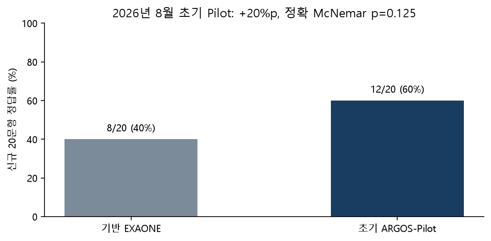
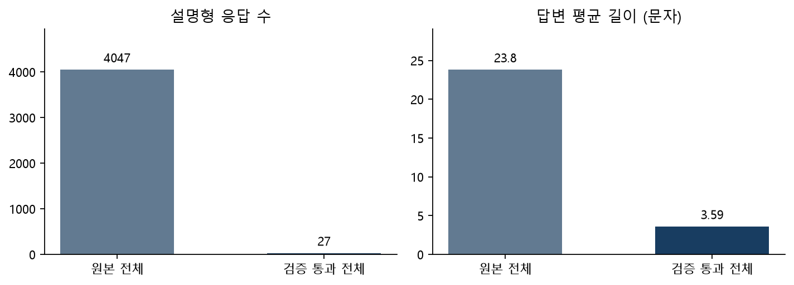
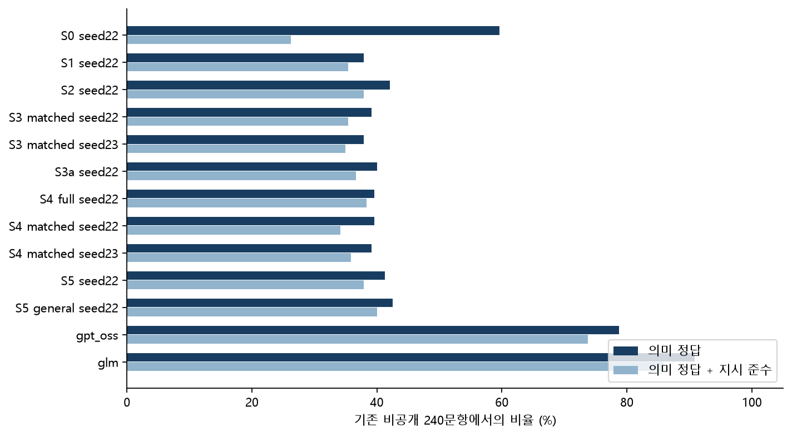
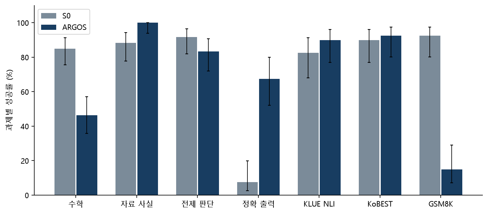
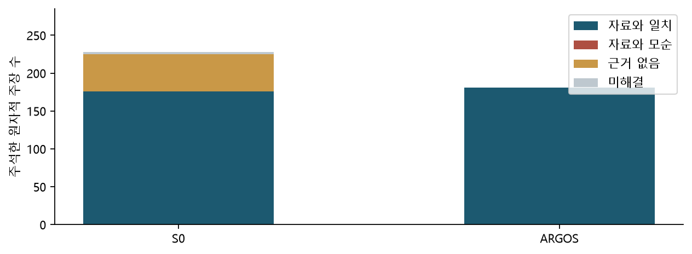

2026년 10월 27일 | 단일 AI 검수
CoMPaSS는 여러 교사의 답변을 검증하여 하나의 한국어 학생 모델에 학습시키는 연구 체계이고, ARGOS는 고정된 EXAONE 기반 모델에 선정한 LoRA 어댑터를 적용한 학생 모델이다. 출발점은 학교 DGX Spark에서 대형 교사들을 순차 실행하는 구상이었다. 실제 연구는 초기 단일 교사 ARGOS-Pilot, RunPod A40 48GB 파일럿, A5000 24GB 대량 수집과 본학습, 로컬 8GB 신규 확인 평가로 발전했다. 따라서 이 보고서의 최종 성능을 DGX 본평가 결과라고 부르는 것은 정확하지 않다.
초기 구상은 GPT-OSS-120B와 GLM-4.5-Air였지만, 보존된 초기 Pilot의 실제 교사는 GPT-OSS-20B였다. 10월 본실험의 교사는 GPT-OSS-20B와 GLM-4.7-Flash로 바뀌었다. 학생은 EXAONE 3.5 7.8B Instruct를 기반으로 한다. 처음 정한 장비와 모델 이름을 끝까지 유지한 실험이 아니라, 실행 가능성과 비용, 실제 오류를 확인하면서 연구 질문을 유지하도록 구현을 바꾼 연구다.
8월 ARGOS-Pilot은 교사 응답 50개 중 통과한 30개로 학생을 학습했다. 당시 신규 20문항 결과는 기반 모델 8/20, ARGOS-Pilot 12/20이었다. 이 결과는 보관된 대화의 도구 출력에서 원래 결과 파일을 읽은 기록으로 복원했다. 현재 연결되지 않은 외장 드라이브에서 원본을 다시 실행하거나 재검증했다고 표현하지 않는다. 표본이 작고 McNemar exact p=0.125이므로 개선 경향이며 보편적인 우월성 증명은 아니다.
10월에는 약 2만 개의 교사 응답에서 검증 여부와 추가 자료를 달리하여 같은 기반 모델에서 별도의 학습본 10개를 만들었다. 본실험은 임대한 A5000 24GB에서 실제 학습과 재로딩을 완료했다. 최종 기본값은 S5_general_control-20261022였지만, 기존 확장 평가의 의미 정답은 102/240으로 기반 모델 143/240보다 낮았다. 내용과 지시를 동시에 만족한 수는 96/240으로 기반 모델 63/240보다 높았다. 형식과 정확도를 분리해야 하는 이유다.
수학 보충 학습으로 다섯 체크포인트를 더 만들었으나 채택 기준을 통과한 후보는 없었다. 이번 마무리에서는 모델을 바꾸지 않고 새 비공개 240문항과 공개 보조 120문항을 봉인한 뒤 두 모델의 720응답을 생성했다. 신규 수학은 기반 모델 68/80, ARGOS 37/80이었다. 제공 기록의 요청 사실을 모두 충족한 문항은 각각 53/60, 60/60이었다. 성능 변화는 영역별이며, 범용 능력 상승이나 교사 초월을 확인한 결과가 아니다.
이 개정본은 초기 DGX 구상과 실제 Pilot, GPU 임대로의 전환, 데이터 손실과 회수, 학습본 구성, 선정, 회복 실패, 신규 확인을 하나의 계보로 연결한다. 검수자는 사용자 요청에 따라 단일 AI이며 사람 검수자 수는 0명이다. 공개 범위의 축소와 변경, 독립성의 한계, 미실행 평가를 함께 기록한다. 연구의 완결은 유리한 점수를 만드는 데 있지 않고 실제 수행과 결론의 범위를 검증 가능하게 남기는 데 있다.
신규 수학 80문항의 확인된 정답은 S0 68개, ARGOS 37개였다. 새 문항에서도 결과를 바꾸기 위한 추가 학습이나 후보 교체는 하지 않았다. 아래 본문은 기존 실험과 신규 평가를 구분하고, 부록은 모든 관측 조건을 보존한다.
| 항목 | 실제 수행 및 판단 |
|---|---|
| 본실험 | 학생 학습 10회와 기존 13조건 평가 완료 |
| 후속 수학 | 교사 재수집 및 5개 체크포인트 보존, 새 후보 채택 없음 |
| 신규 확인 | 비공개 240문항과 공개 120문항 × 2모델 |
| 검수 | 단일 AI, 사람 0명, 독립 평가자 카파 미산출 |
| 모델 선택 | 기존 S5_general_control 유지, 범용 우월성 주장 없음 |
| 공개 | 보고서와 집계 및 재현 코드, 비공개 문항과 가중치 제외 |
최초 목표는 두 교사의 서로 다른 장점을 작은 학생에 통합하여 개별 교사보다 나은 부분이 생기는지 조사하는 것이었다. 여기서 교사들의 출신 지역이 다르다는 이유만으로 특정 지역의 인터넷 지식을 모두 대표한다고 가정하지 않았다. 같은 질문의 답변, 공통 오답, 답변 회피, 근거와 설명 방식에서 실제 차이를 측정하는 것이 출발점이었다.
지식을 통합한다는 말은 두 교사 가중치를 평균하거나 실행 때마다 두 교사를 호출한다는 뜻이 아니다. 같은 질문에 대한 교사의 최종 답을 학습 예제로 저장하고, 검증 또는 원본 선택 규칙에 따라 학생의 감독 학습 목표로 사용했다. 학습 후 추론은 선택한 EXAONE 기반 모델과 LoRA 어댑터로 수행한다. 교사 답변이 서로 다르다는 사실도 어느 한 답이 정답이라는 증거는 아니므로 외부 정답이나 자료 근거가 필요했다.
CoMPaSS의 소프트웨어에는 질문과 정답의 분리, 교사별 원문 저장, 검증 결과, 조건별 학습 자료, 모델 실행 및 재현 로그가 포함됐다. ARGOS-Pilot과 최종 ARGOS는 같은 연구 계열이지만 학습 자료, 학습 단계, 평가 문항이 다르다. 초기 Pilot의 +20%p와 최종 수학 점수를 하나의 연속 성능 곡선으로 연결해서는 안 된다.
이번 개정은 숫자만 늘린 보고서가 아니라 연구의 실제 전개를 복원한 것이다. 8월 기록과 10월 실행을 분리하고, 계획했던 것, 시도하다 중단한 것, 완료한 것, 완료했으나 개선되지 않은 것을 모두 기록한다. 초기 가설이 최종 결과에서 지지되지 않았더라도 이미 완성한 수집·검증·학습·비교 시스템의 공학적 성과와 성능상의 실패를 각각 평가할 수 있다.
| 시기 | 단계 | 장비와 수행 내용 |
|---|---|---|
| 2026.08.09~11 | 설계 동결 | DGX 교사 실행 준비와 데이터 분리·승인 장치 |
| 2026.08.15 | 첫 ARGOS-Pilot | DGX 교사 기록 50응답 중 PASS30 → 로컬 15스텝 학습 |
| 2026.10.22~23 | 클라우드 전환 | A40 48GB 임대, 150문항 프로파일 비교와 학습 시간 측정 |
| 2026.10.23~24 | 24GB 수집 | A5000으로 이전, 기존 응답 회수 후 수집·별도 재생성 |
| 2026.10.25~26 | 본실험 | A5000 24GB에서 독립 학생 학습 10회와 13조건 평가 |
| 2026.10.26 | 수학 보충 | 후속 교사 응답과 5개 체크포인트 진단, 새 후보 미채택 |
| 2026.10.26~27 | 동결 확인 | 로컬 RTX 5060 Ti에서 새 비공개240 + 공개120 × 2모델 |
8월 계획의 중심 장비는 학교 DGX Spark였고, 교사 후보는 GPT-OSS-120B와 GLM-4.5-Air였다. 두 모델을 동시에 메모리에 올리는 방식보다 한 교사의 응답을 저장하고 종료한 뒤 다음 교사를 실행하는 순차 운용을 계획했다. DGX용 launcher와 사전 점검, 교사 endpoint 확인, 모델과 데이터 checksum, 실행 ID, 실패 후 재개 절차를 준비했다. 이 문서들은 준비와 실행 계약의 증거이며 그 자체가 대형 두 교사의 본학습·최종 평가 완료 증거는 아니다. [H05]
Git 이력에는 8월 9일 Pilot-v1 및 교사 프로토콜 동결, 8월 10일 pre-DGX 프로토콜 동결, 8월 11일 DGX 교사 launcher 정리가 남아 있다. 초기 코드에는 mock 교사와 작은 실행 fixture도 있었다. 이들은 데이터 계약과 중단·재개를 검증하기 위한 것으로 실제 교사 성능의 측정값에 섞지 않았다. 나중에 클라우드로 옮길 때도 이 코드와 질문·검증·학습 모듈을 활용했다.
초기 설계부터 비교의 혼동을 줄이기 위한 수정이 있었다. 두 교사의 답을 모두 쓰는 S3a와 질문당 하나를 선택하는 S3b를 분리했다. S4가 실패 질문을 제외하면 질문 집합이 달라지므로, S4_teacher_only와 동일한 질문 집합을 가진 S3_matched를 만들었다. 검증된 교사 답의 선택과 사람이 새로 쓴 답의 효과를 구분하기 위해 사람 수정 조건도 별도로 설계했다. 실제 본실험에서 실행한 조건만 결과로 보고한다.
한국어 원천 자료가 없던 초기 S5는 비어 있는 확장 자리였다. S4를 그대로 복사해 S5라고 부르지 않도록 placeholder를 명시했다. 10월에는 실제 한국어 QA와 일반 영어 QA를 각각 500개씩 준비해 대조 조건을 만들었다. 같은 이름의 S5라도 초기 미실행 계획과 나중에 데이터를 갖추어 학습한 조건은 단계가 다르다.
본 보고서에서 DGX라는 표현은 초기 구상과 교사 Pilot의 출처를 설명할 때 사용한다. 최종 열 개 학생의 학습 장비와 본평가 장비는 임대 A5000 24GB다. 보존된 초기 교사 run metadata에는 엔진·양자화·리비전 값이 비어 있어 그 세부 실행값을 나중에 추정해서 채우지 않았다. 계획 문서의 120B를 실제 Pilot 교사의 20B와 혼동하지 않는 것도 같은 원칙이다.
| 단계 | 교사 / 학생 | 증거와 해석 |
|---|---|---|
| 초기 구상 | gpt-oss-120B + GLM-4.5-Air | 학교 DGX Spark 활용 계획. 최종 본실험 사양이 아님 |
| 첫 Pilot | gpt-oss-20B / EXAONE-3.5-7.8B | DGX 교사 수집 기록. 학생 학습은 로컬 GPU |
| 10월 본실험 | gpt-oss-20B + GLM-4.7-Flash / 같은 EXAONE | 임대 GPU에서 두 교사의 답변을 사용한 조건별 학습 |
초기 실제 실험에서는 DGX에서 확보했다는 기록이 있는 GPT-OSS-20B 응답 50개를 검토해 통과 30개와 실패 20개로 나눴다. Pilot 질문 풀은 60개였으므로 응답 50개의 수집 범위와 전체 질문 수를 구분한다. 보존된 교사 설정은 temperature 0, top-p 1, seed 7, 최대 1536토큰이었다. 학습에는 통과 30개만 사용했고 실패·mock·비공개 평가 자료와 원시 reasoning, 정답표를 넣지 않았다. [H01]
기존 주실험 데이터 빌더는 Pilot 자료를 거절하도록 설계되어 있었다. 이를 풀어서 모든 자료가 섞이게 하지 않고 별도의 Pilot 빌더를 만들었다. 질문 ID로 검수된 응답을 연결하고 최종 답만 학습 목표로 저장했으며, 출처와 검수 상태를 기록했다. 이때 저장 필드의 manual 또는 passed라는 이름만으로 실제 사람 2인의 독립 검수가 있었다고 해석하지 않는다.
초기 학생 실행은 로컬 RTX 5060 Ti에서 수행했다. 학습 설정은 고정 EXAONE 7.8B 리비전, NF4 4비트와 BF16, LoRA rank16·alpha32·dropout0.05, 길이768, 배치1·누적4, 학습률0.0002였다. 2 epoch을 설정했지만 max_steps=15로 제한되어 저장된 마지막 epoch은 약1.93이다. 학습 시간은428.9092초, 전체 평균 학습 손실은1.08326으로 기록되어 있고, 어댑터 재로딩과 비양자화 fallback 없음이 확인되어 있다. 이 손실값은 정확도나 교사 초월 지표가 아니다.
처음 구성한 10개 held-out 후보는 전역 이력 검사에서 4개가 이미 답변된 것으로 확인되어 적격성을 잃었다. 그 결과를 성공적인 독립 평가로 채택하지 않고 보존한 뒤 완전히 새 20문항을 작성했다. 질문과 checker를 출력 전에 고정하고, 두 모델의 tokenizer·문항 순서·EOS·pad·greedy·최대256토큰을 맞췄다. 답안은 모델 입력에서 제외했다.
새 평가는 상식4, STEM4, 지시3, 한국어3, 코드3, 전제3으로 구성했다. exact match8, 프로그램 제약5, 계산4, 코드 실행3의 검사 방식을 사용했다. 결과는 Base8/20, ARGOS-Pilot12/20이었다. 둘 다 정답8, Base만 정답0, ARGOS만 정답4, 둘 다 오답8이다. Base의 길이 잘림3개가 Pilot에서0개가 되었고, 형식 위반은4개에서3개가 됐다. 추가로 맞힌 사례에는 한국어 조건 처리와 출력 형식, 잘림 회피와 checker가 실행 가능한 코드가 포함되어 있었다.
이 단계에서는 +20%p의 개선을 관측했다. 다만 평가가20개이고 영역별 표본은3~4개이며 McNemar exact 양측 p=0.125다. 두 교사 통합 효과나 개별 교사 초월을 검증한 단계가 아니다. 특히 당시 GPT-OSS 교사를 같은 신규20문항에서 비교한 결과는 이 자료에 없다.
이번 조사에서는 외장 드라이브가 연결되어 있지 않아 당시 원본 디렉터리를 다시 읽지 못했다. 대신 8월15일 대화에 저장된 도구 출력에서 summary·trainer_state·run_metadata·검증 보고서를 읽은 내용을 복원했다. 공개 H01에는 복원한 수치, 당시 파일 해시, 대화 기록 해시와 증거 종류를 담았다. 오늘 새로 실행한 결과와 역사 기록에서 복원한 결과를 구별한다.

| 항목 | 기록 |
|---|---|
| 교사 데이터 | 50응답 중 PASS30, FAIL20. PASS30만 학습 |
| 학생 설정 | 4bit, batch1 × accumulation4, length768, lr0.0002, LoRA rank16/alpha32 |
| 실제 학습 | 15 optimizer steps, epoch1.9333, 428.9092초, loss1.08326 |
| 런타임 확인 | 4bit 실학습, 저장 어댑터 재로딩 성공, 비양자화 fallback 없음 |
| 짝지은 결과 | 둘 다 정답8 / ARGOS만 정답4 / 기본만 정답0 / 둘 다 오답8 |
| 길이 미완료 | 기본3개 → Pilot0개 |
| 형식 위반 | 기본4개 → Pilot3개 |
| 일반화 한계 | 20문항·단일 시드·교사 동시평가 없음. 통계적 확증 아님 |
10월22일의 실행 요청은 기존 코드·데이터·기록을 조사해 재사용하고, GPT-OSS-20B와 GLM-4.7-Flash의 응답으로 EXAONE을 학습시키는 클라우드 연구 시스템을 완성하는 것이었다. 운영 목표 장비도 DGX에서 임대48GB GPU로 바뀌었다. 현재 남은 기록만으로 DGX의 고장이나 접근 불가를 전환의 유일한 이유라고 단정할 수는 없다. 확인 가능한 것은 사용자가 클라우드 실행을 명시했고 이후 재고·비용·복구 문제를 보며 장비를 조정했다는 사실이다.
처음에는 RTX A6000 48GB를 검토했다. Community Cloud의 시간당0.33달러 견적이 있었지만 품절이어서 실제 임대와 구분했다. 실제 파일럿은 RunPod Secure A40 48GB에서 수행했다. 관측 메모리는46,068MiB였고, 당시 GPU0.59달러/시간에 root50GB0.007달러 및 volume10GB0.001달러를 더한 실행 요율은 약0.598달러/시간이었다. 이 값은 과거 실행 기록이며 현재 가격표가 아니다. [H03][H05]
기존 프로젝트를 버리고 새로 만든 것은 아니다. 58aa24b 버전의 원본 소스를 별도 ZIP으로 보관하고 기존154개 역사 파일의 해시가 바뀌지 않았음을 확인했다. 기존 teacher adapter, 질문 계약, 검증, 학생 학습, 누출 검사 기능을 재사용하며 SQLite 작업 저장과 백업, 동시 요청, 실제 tokenizer 감독 예산, 신규 데이터 승인 경계를 확장했다. 초기 파이프라인의 실험 통제 원칙을 더 큰 수집에 적용한 전환이었다.
유료 장비에 올리기 전에는 로컬 작은 임의 가중치로 CUDA NF4 학습·체크포인트 중단·재개·재로딩을 검사했다. 실제 GPT-OSS와 GLM의 일부 GPU 적재 smoke도 수행했다. 작은 모델과 몇 개 fixture의 성공을 7.8B 본학습 성공으로 취급하지 않았다. 이후 A40에서는 실제 사전학습 EXAONE7.8B와224개 양자화 선형층으로32개 fixture,2 optimizer step을 측정했다. 학습75.0468초, 로딩·저장·재로딩 포함115.097초였으며 이는 실행 시간과 메모리를 추정하기 위한 측정이었다.
저장 공간도 실제로 수정했다. 학생 원본 가중치가 FP32 약31.27GB여서 첫 다운로드가 디스크 부족으로 실패했다. 교사 GGUF 두 개 약29.94GB와 학생 캐시를50GB root에 모두 담을 수 없음을 확인하고 실제 파일 크기에 근거한 용량 점검과 충분한 저장 공간 또는 명시적인 캐시 교체를 적용했다. 메모리와 디스크 문제를 성능 결과의 실패와 혼동하지 않는다.
A40 파일럿에서는 같은150문항에 대해 생성 설정을 바꾸어 실행했다. GLM thinking을 끄면 빨라졌지만 오답이73개로 늘어 대량 수집 설정으로 채택하지 않았다. 최종 후보 프로필은 GPT low reasoning과 GLM thinking 활성·총3072토큰을 사용했다. 이때 자동 통과는 GPT108/150, GLM114/150이었고 각31개가 추가 검토 대상이었다. 자동 통과와 사람 승인, 최종 평가 정확도는 서로 다르다.
여러 설정에서 모은 완료 응답758개는 같은150문항의 반복을 포함한다. 이를758개의 독립 질문으로 세지 않았다. 서로 다른 생성 설정에서 나온 답을 최종 확인 시험처럼 비교하지 않고, 실행 프로필 선택과 오류 진단의 증거로 기록했다.
| 장비 | 역할 | 비용 또는 측정 범위 |
|---|---|---|
| DGX Spark | 초기 구상과 초기 교사 수집 기록 | 10월 본실험 장비로 표기하지 않음 |
| A6000 Community | 임대 후보 견적 | 당시 $0.33/h 견적, 재고 없음. 실제 사용 주장 없음 |
| A40 48GB Secure | 실제 임대 파일럿 | GPU0.59 + root0.007 + volume0.001 = $0.598/h |
| A5000 24GB | 대량 수집·본학습·기존 평가 | $0.27/h 기록, 24,564MiB 물리 메모리 |
| 로컬 RTX 5060 Ti | 8월 학생 Pilot·10월 신규 확인 | 새 클라우드 비용 없음. 전기요금 미계측 |
| 프로파일 | 완료 응답 | PASS / REVIEW / FAIL | 응답 생성 구간 |
|---|---|---|---|
| GPT 초기 | 150 | 89 / 54 / 7 | 87.8초 |
| GLM 초기 | 9 | 길이 문제로 중단 | 비교 불완전 |
| GLM thinking budget512 | 149 (+1 실패) | 17 / 130 / 2 | 872.1초 |
| GPT strict, 4slots | 150 | 108 / 31 / 11 | 108.5초 |
| GLM thinking off | 150 | 45 / 32 / 73 | 29.7초 |
| GLM thinking on, cap3072 | 150 | 114 / 31 / 5 | 1,024초 |
표의 시간은 모델 다운로드·로딩·대기·임대 전체 시간이 아니라 해당 응답 생성 구간이다. 758개 완료 응답은 여러 프로파일에서 같은 150문항을 반복한 수이며 758개의 새 문항이 아니다. 빠른 thinking off보다 정답 검증을 통과하는 최종 프로파일을 채택했다. 자료 H03 및 당시 연구 기록 H05.
초기48GB 대량 수집은 시간·비용 경계에 도달했을 때7,480개 성공 응답으로 멈췄다. 당시 이전 로컬 백업은3,936개였으나 원격 최종 자료를 회수해7,480개와 해시를 대조했다. 남은 작업은12,500개 대기와20개 실패로 기록되어 있었으며 전체2만 응답을 성공했다고 부를 수 없었다. 생성 완료, 로컬 보관, 검증 통과를 별도의 상태로 관리한 이유다. [H02]
이어 비용을 줄이기 위해 RTX A5000 24GB로 옮겼다. 이때 GPU 요율은0.27달러/시간, 비용 보호용 보수 요율은0.31달러/시간이었고 상한은30시간·9.30달러로 기록되었다. 관측된 물리 메모리는24,564MiB, 추론 중 사용량은18,451MiB였다. 질문과 모델 설정은 유지하고 기존 수집을 이어 갔으며, 하드웨어 변경 사실을 상태 기록에 남겼다. 메모리 용량만으로 출력이 동일하다고 가정하지 않았다.
이후 원격 본수집 성공은19,923개, 생성 실패는77개였다. PC의 일관된 백업에 보관된 성공은19,839개여서 성공했으나 회수하지 못한84개가 남았다. 84개는 실패한77개와 다르다. 원격 실행에 성공했다는 이유만으로 로컬 학습 입력에 존재하는 것으로 세지 않았고, 없는 응답을 새로 만들어 채우지도 않았다.
정치·역사·국제관계와 교사 의견 차이에 관한 추가 요구가 생기면서 별도의 보충 질문을 수집했다. 먼저 얻은 로컬101응답은 보존했고, 사용자가 빌린 GPU에서 같은 질문을 다시 실행하도록 요청해 별도24GB 클라우드 DB를 만들었다.144개 질문에 두 교사의288응답을 목표로 했고 실제287개가 저장됐다. GPT143개 성공과1개 길이 실패, GLM144개 성공이다. 실패 항목은 최대3회 시도 후에도 실패로 남겼다.
로컬과 클라우드에서 비교 가능한100쌍 중 문자열이 같은 것은36개, 다른 것은64개였다. 이것은 출력 문자열 비교이며 클라우드의 정확도가64개 더 높다거나 VRAM의 인과 효과를 증명한 결과가 아니다. 같은 질문을 재생성한 응답도 별개의 새 질문으로 합산하지 않았다.
최종 로컬 수집 계보는 기존19,839개와 보충287개를 합친20,126개다. 동결 전에22개를 제외하여 전체 원본 학습 조건은20,104응답·10,133질문이 됐다. 검증본은14,903응답·7,974질문이며 실패1,228개와 검토 보류3,973개를 제외했다. 이 수치 관계를 명시하면 수집 목표2만, 원격 성공 수, 로컬 보관 수, 학습 응답 수가 다르게 등장하는 이유를 설명할 수 있다.
수집 종료 후 멈추라는 사용자 지시가 있었던 시점에는 학습을 자동으로 이어 가지 않았다. 이후 별도 진행 지시에 따라 검수와 본학습이 시작됐다. 이 과정도 계획서의5일 일정이 단일 연속 실행으로 그대로 수행되었다고 표현하지 않는 이유다. 비용·시간 상한과 장비 회수, 승인 범위가 단계마다 달랐다.
봉인 전 제외 원장에는11개 질문이 있다.10개는 분석용 의견 문항,1개는 보류 평가의 입법 역할 주제와 겹칠 가능성이 있는 모호한 문항으로 기록되었다. 제외된 응답은 별도 집계에서22개로 확인된다. 이는 동결 후 검증 미통과5,201개와 다른 단계다. 중복22개라고 바꾸어 설명하지 않는다. 자료 H07.
| 범위 | 응답 수 | 관계 |
|---|---|---|
| 원격 주 수집 성공 | 19,923 | 생성 실패77개와 별도 |
| 로컬 주 수집 회수 | 19,839 | 원격 성공 중84개 미회수 |
| 별도 cloud24-r2 회수 | 287 | 144문항 × 2교사 중1개 생성 실패 |
| 원격 성공 합산 | 20,210 | 19,923 + 287. 과거 대화의20,212와2개 차이, 미해명 |
| 로컬 통합 입력 | 20,126 | 19,839 + 287 |
| 동결 전 제외 | 22 | 로컬 통합 입력에서 제외 |
| 본실험 원본 전체 | 20,104 | 20,126 − 22, 고유 질문10,133 |
| 검증 통과 전체 | 14,903 | 고유 질문7,974 |
| 학습 미포함 | 5,201 | FAIL1,228 + REVIEW3,973 |
수량을 비교할 때 같은 시점·상태·저장 위치의 분모를 맞춰야 한다. 과거 대화의 20,212라는 수치는 현재 회수 원장으로 그대로 재현되지 않는다. 현재 확인되는 원격 성공 합은20,210, 실제 로컬 통합 입력은20,126이다. 둘의 차이84개는 미회수 성공이며, 로컬 입력과 동결본 사이22개는 제외 항목이다. 20,212에서20,104를 단순히108개 중복 제거로 설명하지 않는다.
학습을 위한 기본 단위는 질문과 교사의 최종 답변이다. 두 교사는 같은 질문에 독립적으로 답했고 원문, 종료 상태, 소요 시간, 생성 토큰과 설정을 기록했다. thinking 또는 reasoning과 최종 답을 분리하여 학습 목표에 불필요한 추론 원문이나 정답 키가 섞이지 않도록 했다. 교사가 실제 생성하지 않은 답을 교사의 답변으로 바꾸어 기록하지 않았다.
숫자·분수·코드 출력·명확한 답안 키는 독립 계산이나 검사기로 대조했다. 설명형과 출처 해석은 바로 자동 PASS로 처리하지 않고 검토 상태로 남겼다. 두 교사가 동의해도 공동 오답일 수 있고 서로 달라도 같은 정답을 다르게 표현할 수 있으므로, 일치 여부와 정확성 여부는 다른 열로 관리했다. 정치적 의견의 차이도 곧바로 검증 가능한 사실 오류로 바꾸지 않았다.
S1과 S2는 각 교사 원답변의 차이를 보기 위한 조건이었다. 주된 검증 효과 비교인 S3_matched와 S4_teacher_only에는 같은7,779개 질문을 사용했다. 미검증 조건의 선택에는 정답이나 품질 신호를 사용하지 않는 균형 규칙을 적용하고, 검증 조건에는 통과한 교사 답을 사용했다. 질문 집합·표본 수·영역 구성과 감독 토큰 예산을 맞추었다. 이 비교가 두 교사 자료를 모두 사용하는 전체 원본 대 전체 검증본보다 검증 효과에 가깝다.
전체 원본 S3a는20,104응답, 전체 검증본은14,903응답을 사용했다. 한국어 QA500개를 더한 S5와 일반 영어 QA500개를 더한 S5_general_control은 각각15,403응답이다. 전체 원본과 검증본은 자료 양과 답의 길이까지 달라지고, 두 추가 자료 조건도 언어 외에 출처와 내용이 달라 순수한 단일 요인의 효과로 해석할 수 없다.
각 학습본은 같은 사전학습 EXAONE에서 별도로 시작했다. 단일 교사2회, 대응 조건2종×2시드4회, 전체 원본1회, 전체 검증본1회, 한국어 추가1회, 일반 추가1회로 총10회다. 열 개를 한 모델에 연속으로 덧붙인 것이 아니며, 최종 선택 후에도 열 개 어댑터를 합쳐 사용하지 않았다. 학습 시드 반복은 일부 핵심 조건에만 배정했다.
실제 학습은 질문에 이어 교사 답변을 생성하도록 다음 토큰 예측 손실을 줄이는 감독 미세조정이다. 기반 가중치는4비트 NF4로 고정하고 q/k/v/out 선형층의 LoRA 어댑터를 학습했다. 답변 토큰에 감독을 적용하며 대응 조건의 예산을 맞추기 위해 답변 후반 손실을 마스킹할 수 있다. 동일한 epoch이 모든 조건에서 동일한 전체 업데이트량을 뜻하지는 않는다.
공통 본학습은 길이2048, 동적 패딩, 배치2·누적8, 학습률0.0002,1 epoch, rank16·alpha32·dropout0.05였다. 최종 선택 모델의 기록은963 optimizer step이며 학습 시간2872.8196초, 평균 학습 손실0.552851이다. 저장 후 실제 재로딩을 확인했고 체크포인트와 실행 metadata를 로컬로 백업했다. 이 손실이 초기 Pilot의 손실보다 작다는 사실만으로 평가 성능이 더 좋다고 결론내리지 않는다.
최종 ARGOS는 S5_general_control-20261022 어댑터와 고정 EXAONE 기반 모델의 조합이다. 즉 이번 선택은 검증 교사 자료에 일반 영어 QA를 더한 조건이었다. 한국형 학생이라는 연구 목표가 한국어 추가 조건의 우월성을 자동으로 증명하지 않으며, 선택 결과를 한국어 원천 자료 효과의 성공이라고 바꾸어 쓰지 않았다.
| 학습본 | 응답 수 | 시드 | 스텝 | 시간 분 | loss |
|---|---|---|---|---|---|
| S1 seed22 | 7,779 | 22 | 487 | 23.6 | 0.7175 |
| S2 seed22 | 7,779 | 22 | 487 | 23.4 | 0.7291 |
| S3 matched seed22 | 7,779 | 22 | 487 | 25.6 | 0.7265 |
| S3 matched seed23 | 7,779 | 23 | 487 | 25.8 | 0.7245 |
| S3a seed22 | 20,104 | 22 | 1257 | 66.1 | 0.7019 |
| S4 full seed22 | 14,903 | 22 | 932 | 45.3 | 0.5765 |
| S4 matched seed22 | 7,779 | 22 | 487 | 27.6 | 0.6774 |
| S4 matched seed23 | 7,779 | 23 | 487 | 23.7 | 0.6781 |
| S5 seed22 | 15,403 | 22 | 963 | 53.0 | 0.5505 |
| S5 general seed22 | 15,403 | 22 | 963 | 47.9 | 0.5529 |
시드 열의22와23은 각각20261022와20261023의 끝 두 자리다. 모든 학습은 같은 기반 모델에 새 어댑터를 붙여 시작했고 실제4bit 학습과 저장 후 어댑터 재로딩 완료가 기록되었다. 시간은 훈련 함수의 train_runtime이며 전체 GPU 임대 시간과 같지 않다. 자료 H06.
연구 질문은 네 가지다. 첫째, 같은 질문과 감독 토큰 예산을 맞춘 경우 검증된 교사 응답이 혼합 원본 응답보다 좋은가. 둘째, 한국어 원천 자료를 추가한 조건이 같은 양의 일반 자료를 추가한 조건보다 좋은가. 셋째, 실용적으로 선택한 학생이 계산 능력과 기존의 강점을 함께 유지하는가. 넷째, 수집과 검증, 학습, 평가를 재현 가능한 기록으로 연결할 수 있는가.
첫 번째 질문은 S3_matched와 S4_teacher_only의 대응 비교가 주된 근거다. 전체 원본과 전체 검증본의 비교는 질문 수와 답변 길이까지 달라지므로 검증만의 효과를 분리하지 못한다. 두 번째 질문에서도 한국어 자료와 일반 대조 자료는 언어 외에 출처와 주제, 문맥 길이, 주석 방식이 다르다. 따라서 결과 차이를 한국어 자체의 순수한 인과 효과로 해석하지 않는다.
세 번째 질문은 기존 최종 평가로 모델을 선택했다는 사실 때문에 별도의 확인이 필요해졌다. 기존 결과는 모델 선택과 오류 진단에 사용한 개발 증거로도 기능했다. 이번 신규 문항 평가에서는 모델과 질문, 정답, 출력 상한을 결과 확인 전에 확정했다. 결과가 불리하더라도 다른 후보로 바꾸거나 같은 문항에 맞춰 재학습하지 않는다.
연구 완결의 기준은 성능 상승의 유무가 아니다. 어떤 자료와 설정에서 어떤 변화가 발생했고, 대안 설명은 무엇이며, 어느 주장까지 증거가 지지하는지 밝히는 것이 기준이다. 수학 회복 실패, 검증 필터가 만든 자료 편중, 소수 학습 시드, 단일 AI 검수도 결과의 일부다. 본 연구는 검증된 자료의 활용이 언제나 성능을 높인다는 보편 명제를 입증하지 않는다.
출력 기반 지식 증류는 교사의 답변을 학생의 감독 학습 자료로 사용하는 방식이다. 교사의 분포 전체를 전달하는 로짓 기반 증류와 달리, 본 연구는 저장한 최종 답변 텍스트를 이용한다. 여러 교사의 답변을 섞으면 응답의 범위와 다양성이 늘 수 있지만, 교사들이 공유하는 오류와 형식 편향도 전달될 수 있다. 교사 간 합의만으로 정답을 결정하지 않은 이유다.
LoRA는 모든 가중치를 갱신하는 대신 일부 선형층에 저랭크 행렬을 추가하는 미세조정 방법이다. 본 실험은 q_proj, k_proj, v_proj, out_proj에 rank 16 어댑터를 사용했다. QLoRA의 핵심은 양자화한 기반 가중치를 유지하면서 어댑터를 학습하는 것이다. 본 실행은 NF4 4비트와 BF16 연산을 사용했으며, 메모리가 부족할 때 비양자화 학습으로 바꾸는 경로를 허용하지 않았다. [R1][R2][R3]
본 연구의 검증 필터는 정답률뿐 아니라 학습 분포도 바꾸었다. 수학의 짧은 정답은 기계적으로 판정하기 쉽고, 긴 설명의 모든 주장과 근거는 판정하기 어렵다. 검토가 어려운 설명을 보류하면 학습 자료가 짧은 정답 위주로 바뀔 수 있다. 이 현상은 검증의 정확성과 별개의 문제이며, 검증 통과율과 답변 길이, 유형별 잔존율을 함께 보아야 한다.
공개 벤치마크는 비교 가능한 자료를 제공하지만 이미 사전학습에 노출되었는지 완전히 확인하기 어렵다. 신규 비공개 문항도 출제 방식이 훈련 자료와 비슷하면 넓은 일반화의 근거가 되지 못한다. 따라서 본 보고서는 기존 문항, 신규 절차적 문항, 제공 자료에 근거한 판단, 공개 표본 벤치마크를 서로 다른 증거로 제시한다. [R4][R5][R6]
DGX Spark 구상 이후 작성한 10월 개정 계획은 48GB 클라우드 GPU와 개인 장비를 연계하는 5일 실험이었다. 실제 연구는 RTX A5000 24GB 클라우드를 중심으로 진행했고, 마지막 신규 평가는 RTX 5060 Ti 8GB 로컬 GPU에서 수행했다. 시간과 메모리 제약에 맞춘 수정은 실제 학습과 평가를 가능하게 했지만, 서로 다른 장비의 지연 시간을 그대로 비교할 수 있다는 뜻은 아니다.
사람 2인 검수는 단일 AI 검수로 변경되었다. 자동 계산과 출처 확인을 결합했지만, 이 과정이 독립적인 사람 판단을 대신 증명하지는 않는다. 이번 사용자 지시에 따라 검수자를 AI로 확정했으며, 사람 검수와 사람 평가자 간 일치도를 완료 항목으로 적지 않았다. 기존 단일 AI 판정의 변동도 삭제하지 않았다.
기존 기본 평가는 학생 최대 512토큰, 교사별로 다른 출력 한도를 사용했다. 이후 원문을 포함한 전체 500문항을 최대 8192토큰으로 다시 평가했다. 낮은 한도의 민감 문항 별도 실행은 취소 보관되었다. 확장 평가가 끝난 뒤에는 수학 저하를 진단하고, 어댑터 영향과 자료 표기, 새 교사 응답을 이용한 보충 학습을 조사했다. 각 단계의 결과를 원래 계획의 사전 지정 실험으로 소급하지 않는다.
이번 최종 정리에서는 추가 학습을 하지 않는다. 이미 수행한 수학 후보와 보충 학습 결과를 부정적 결과로 수용하고, 동결한 모델을 신규 자료에서 확인한다. 공개 보조 평가는 KLUE NLI, KoBEST BoolQ, GSM8K의 각 40문항 표본으로 정했다. 기존 KMMLU 100문항도 별도로 보존한다. MMLU Pro, GPQA, CMMLU 전체 평가는 수행하지 않았으며 이번 연구의 완료 범위에 넣지 않는다. 이 선택은 미수행을 숨기는 대신 현재의 연구 질문에 필요한 근거를 모으는 범위 조정이다.
| 항목 | 계획의 변화 | 최종 기록 |
|---|---|---|
| 장비 | DGX Spark 이후 48GB 임대 계획 | A40 파일럿 → A5000 24GB 본실험 → 8GB 로컬 확인 |
| 검수 | 사람 2명 이상 | 사용자 요청에 따른 단일 AI 응답 판정 |
| 평가 | 선봉인 최종 평가 | 기존 평가의 선정 사용 공개 후 새 평가 |
| 학습 | 사전 조건 비교 | 본실험 이후 별도 진단 및 재학습 |
| 벤치마크 | 여러 공개 평가 후보 | KMMLU100 보존 및 3종 각40 보완 |
| 완결 | 가설 검증과 결과 정리 | 성능 향상 없는 결과도 보고 |
수집한 성공 응답 수, 로컬에 보관한 응답 수, 검증을 통과한 응답 수, 학습에 실제 사용한 표본 수는 다르다. 본실험 입력으로 사용한 로컬 수집 응답은 20,126개였으며, 동결 전 22개를 제외해 전체 원본 조건은 20,104응답과 10,133개 질문으로 구성되었다. 검증본은 14,903응답과 7,974개 질문이다. 원본 전체 조건에서 빠진 5,201응답은 검증 실패 1,228개와 추가 검토 보류 3,973개로 구분된다. 보류를 오답으로 바꾸거나 승인된 정답처럼 학습시키지 않았다. [E14]
과거 수집 기록에는 원격 생성에 성공했으나 회수하지 못한 응답도 존재했다. 그 수는 생성 실패와 다르며, 로컬에 실제 존재하는 표본만 후속 데이터의 근거로 삼았다. 동일 질문을 로컬과 클라우드에서 재생성한 응답도 독립적인 새 질문 수에 더하지 않는다. 응답의 상태, 질문 ID, 교사, 원문 해시와 변환 이력을 함께 보관하는 이유다.
자료 계보는 원본 교사 응답, 검증 승인 교사 응답, 별도 원천 자료, 후속 재수집, 진단용 생성 자료를 구분한다. 교사가 실제 생성하지 않은 답을 교사 응답으로 부르지 않았다. 후속 수학 단계에서는 실제 교사 답변의 계산과 최종 답을 검증하고, 보조 formula 태그를 제거한 변환을 기록했다. 모든 자료를 단순히 증류 데이터라고 묶으면 출처별 효과와 오류를 해석할 수 없다.
특히 원본 설명형 4,047개가 검증본에서 27개로 줄고, 평균 답변 길이가 23.80자에서 3.59자로 감소했다. 원본 설명형 중 남은 비율은 약 0.67%다. 이는 검증 결과가 자료의 품질뿐 아니라 답변 형태를 크게 바꾸었음을 보여준다. 긴 풀이를 학습하지 못한 원인이라는 단정은 불가능하지만, 계산 능력 저하를 해석할 때 반드시 고려해야 할 관측이다.

S1은 GPT 원답변, S2는 GLM 원답변, S3_matched는 두 교사의 혼합 원답변, S4_teacher_only는 검증된 교사 응답을 사용한다. 네 조건은 7,779개 공통 질문을 기준으로 구성되었다. 질문별 감독 토큰 예산을 맞추기 위해 답변 후반의 손실을 마스킹할 수 있으나, 입력 자체를 자르지는 않았다. 내용의 길이와 감독 위치를 완전히 같게 만드는 통제는 아니므로 이 선택의 영향을 남겨둔다.
S3a는 전체 원본 20,104응답, S4_full_verified는 전체 검증본 14,903응답을 사용한다. S5와 S5_general_control은 각각 검증본에 별도 자료 500개를 더한 15,403응답이다. 두 조건의 추가 자료는 언어와 내용 분포가 함께 다르다. S3_matched와 S4_teacher_only는 두 학습 시드로 반복했고 다른 조건은 한 시드다. 총 10개의 학습 실행이 저장과 재로딩 검증을 완료했다.
공통 설정은 NF4와 BF16, 배치 2, 누적 8, 길이 2048, 동적 패딩, 학습률 0.0002, 1 epoch, LoRA rank 16과 alpha 32, dropout 0.05이다. 기반 리비전은 553ea250b9a5317231459279d5847d6cf955b9aa로 고정했다. 동일 epoch은 조건마다 같은 업데이트 횟수나 같은 전체 학습 토큰 수를 뜻하지 않는다. 예를 들어 선택 조건은 963 step이며 원본 전체 조건의 표본 수가 더 크다.
통제의 강도는 비교마다 다르다. 질문과 감독 예산을 맞춘 대응 비교는 검증의 효과를 살펴보는 데 상대적으로 적합하다. 전체 원본과 전체 검증본의 비교는 데이터 양과 질문 구성, 답변 길이가 모두 바뀐 결합 개입이다. 한 시드의 최대 점수를 안정적인 최적 모델로 해석하지 않는 것도 같은 이유다.
| 조건 | 응답 수 | 설명형 | 평균 답변 문자 | 평균 감독 토큰 |
|---|---|---|---|---|
| S1 | 7,779 | 17 | 3.73 | 3.95 |
| S2 | 7,779 | 17 | 3.68 | 3.95 |
| S3_matched | 7,779 | 17 | 3.68 | 3.95 |
| S3a | 20,104 | 4047 | 23.80 | 16.72 |
| S4_full_verified | 14,903 | 27 | 3.59 | 3.97 |
| S4_teacher_only | 7,779 | 17 | 3.62 | 3.95 |
| S5 | 15,403 | 27 | 3.71 | 4.04 |
| S5_general_control | 15,403 | 27 | 4.11 | 4.04 |
기존 비공개 평가는 STEM 100, 사실 및 기록 판단 50, 전제 판단 50, 정치 역사 국제관계 40으로 총 240문항이다. 공개 KMMLU는 다섯 과목에서 20문항씩 추출한 100문항이다. 이후 원문 재검사 124문항과 신규 민감 36문항을 더한 500문항을 13개 조건에서 평가했다. 교사 둘, 기반 학생 하나, 학습 학생 열 개의 조합이다.
S5_general_control의 기존 내용과 지시 동시 통과는 원본 99/240, 확장 96/240으로 학습 학생 중 높았다. 그러나 확장 의미 정답은 102/240으로 S0의 143/240보다 낮았다. STEM에서는 선택 학생 1/100, S0 50/100이었다. 원래 선택은 지시 조건을 포함한 과제 성적을 우선한 실용적 기본값 결정이었으며, 수학을 포함한 범용 능력의 최적화가 아니었다.
검증본과 혼합 원본의 두 시드 대응 비교에서 비공개 전체 동시 통과율 차이는 원본 -1.25%p, 확장 약 -0.208%p였다. 문항 부트스트랩 구간과 가족 부트스트랩 구간은 모두 0을 포함했다. 이 자료에서 검증 조건의 우월성을 확인하지 못했다. 차이가 정확히 0이라는 증명도 아니다. 원문 노출 진단에서 관측된 개선은 새 지식의 일반화와 구분한다.
교사 초월도 확인되지 않았다. 확장 비공개 동시 통과는 GLM 206/240, GPT OSS 177/240, 선택 학생 96/240이다. 특정 소영역에서 높은 점수가 나왔더라도 전체 결과나 학습 이전 기반 모델의 수준을 무시한 초월 주장을 할 수 없다. 같은 최종 평가를 모델 선택에 이용했으므로 기존 선택 점수는 선택 이후 독립 검증이 아니다.
선정은 완료된 결과를 읽은 뒤 내린 실용적 결정이었다. 사전에 정한 과제 지표와 사후의 배포용 선택을 구분한다. S5_general_control은 검증된 교사 응답14,903개에 일반 영어 QA500개를 추가한15,403개 학습본으로, 한국어 자료를 추가한 S5와 다르다. 원본과 확장에서 각각99/240·96/240의 비공개 동시 통과가 관측 학생 중 가장 높았으나, 같은 핵심 문항을 재사용한 두 설정이지 독립 반복이 아니다. 공개35/100은 최고값이 아니었으며 수학 저하도 선정 기록에 이미 명시되어 있었다. 따라서 신규 평가에서 처음 발견한 예상 밖의 실패로 서술하지 않는다.
| 출력 조건 | 학습본 | 의미 정답 /240 | 동시 통과 /240 |
|---|---|---|---|
| original | S3 matched seed22 | 94 | 92 |
| original | S3 matched seed23 | 91 | 90 |
| original | S4 matched seed22 | 95 | 89 |
| original | S4 matched seed23 | 93 | 87 |
| extended_8192 | S3 matched seed22 | 94 | 85 |
| extended_8192 | S3 matched seed23 | 91 | 84 |
| extended_8192 | S4 matched seed22 | 95 | 82 |
| extended_8192 | S4 matched seed23 | 94 | 86 |
| 출력 조건 | 차이 %p | 문항 재표집95% | 계열 재표집95% |
|---|---|---|---|
| original | -1.250 | -3.542 ~ 1.042 | -2.999 ~ 0.442 |
| extended_8192 | -0.208 | -2.500 ~ 2.083 | -3.092 ~ 3.107 |
위 구간은 관측된 두 시드 결과의 문항·계열 재표집에 따른 변동이며 학습 시드 전체의 변동을 충분히 추정하지 못한다. 양쪽 구간 모두0을 포함하므로 검증본의 확정적 우월성을 주장하지 않는다. 자료 E01·E02.

| 조건 | 의미 정답 | 지시 준수 | 동시 통과 | 미완료 |
|---|---|---|---|---|
| S0 seed22 | 143/240 (59.6%) | 82/240 (34.2%) | 63/240 (26.2%) | 1 |
| S1 seed22 | 91/240 (37.9%) | 216/240 (90.0%) | 85/240 (35.4%) | 0 |
| S2 seed22 | 101/240 (42.1%) | 206/240 (85.8%) | 91/240 (37.9%) | 0 |
| S3 matched seed22 | 94/240 (39.2%) | 212/240 (88.3%) | 85/240 (35.4%) | 0 |
| S3 matched seed23 | 91/240 (37.9%) | 220/240 (91.7%) | 84/240 (35.0%) | 0 |
| S3a seed22 | 96/240 (40.0%) | 220/240 (91.7%) | 88/240 (36.7%) | 3 |
| S4 full seed22 | 95/240 (39.6%) | 212/240 (88.3%) | 92/240 (38.3%) | 3 |
| S4 matched seed22 | 95/240 (39.6%) | 197/240 (82.1%) | 82/240 (34.2%) | 1 |
| S4 matched seed23 | 94/240 (39.2%) | 213/240 (88.8%) | 86/240 (35.8%) | 0 |
| S5 seed22 | 99/240 (41.2%) | 214/240 (89.2%) | 91/240 (37.9%) | 0 |
| S5 general seed22 | 102/240 (42.5%) | 213/240 (88.8%) | 96/240 (40.0%) | 1 |
| gpt_oss | 189/240 (78.8%) | 217/240 (90.4%) | 177/240 (73.8%) | 0 |
| glm | 218/240 (90.8%) | 220/240 (91.7%) | 206/240 (85.8%) | 7 |
기존 STEM 100문항에서 S0가 맞힌 50문항 중 선택 학생이 유지한 것은 1문항이고, 49문항은 맞음에서 틀림으로 바뀌었다. 이 변화는 형식 불일치만으로 설명되지 않는다. 선택 학생은 숫자나 짧은 답을 잘 출력했지만 그 값이 맞지 않은 경우가 많았다. 따라서 정답 표현을 잘 추출했다는 사실을 계산 능력 회복과 혼동하지 않았다.
토큰화 감사에서는 선택 학습 자료의 수학 숫자 목표 7,230행과 고유 모델 입력 3,925개를 확인했다. 동일 입력에 서로 다른 숫자 정답이 붙은 충돌 군은 0개였다. 한편 별도 구성 사례에서는 NFKC 정규화로 위첨자 표기가 평문 숫자와 같은 입력이 되는 표현 충돌을 확인했다. 이 반례는 입력 표현의 위험을 보여주지만, 실제 학습 표본에 정답 충돌이 있었다는 증거는 아니다. 둘을 구분한다.
원본 토큰 조합을 재검사한 96,929행 중 일부 접두 경계의 차이 3행이 확인되어 후속 조합 방식을 준비했다. 원래 자료와 학습 결과는 고치지 않았다. 수학 정답 분포의 절대값 중앙값은 선택 학습 자료 18, 기존 평가 숫자 80문항 3,314였다. 값의 크기는 난이도 자체가 아니지만, 학습과 평가의 분포가 같은지 재검토할 근거다.
가능한 설명은 짧은 정답 편중, 학습률과 업데이트량, 자료 유형의 감소, 표현 정규화, 평가 분포 차이 등이 있다. 본 연구에는 이 요인을 하나씩 분리한 완전한 요인 실험이 없다. 따라서 한 요인을 수학 붕괴의 확정 원인으로 지목하지 않는다. 실제 오류와 구현 점검을 연결하되 인과 주장은 제한한다.
설명형4,047→27개와 평균23.80→3.59자는 실제 학습용 assistant 정답 부분을 센 것으로, 원본 전체 S3a20,104행과 검증 전체 S4 14,903행의 비교다. 같은 질문끼리만 대응한 분석이 아니다. 둘 다 교사의 final_answer를 사용하며 원시 내부 추론 전체를 센 값이 아니다. 최종 일반 QA 추가 모델에는 이 검증 전체에500행이 더 들어간다. 이 모집단 차이와 전처리·선정·학습 효과를 분리한 실험을 하지 않았으므로 길이 감소를 저하의 확정 원인으로 결론짓지 않는다.
후속 단계에서는 단순한 임의 정답 생성과 실제 교사 응답 증류를 분리했다. 기록상 원문과 형식 안내를 통한 재수집을 합친 실제 교사 생성 시도는 494회였다. 합쳐진 320개 검토 대상 중 249응답이 계산 검증을 통과했고, 그중 수학 186응답은 109개 고유 질문과 16개 계열을 포함했다. 검증은 최종 분수 값, 각 계산 등식, 계열별 32개 값 대입을 이용했다. 이는 유한 계산 검사이며 독립 사람 검수나 일반적인 기호 증명은 아니다.
교사 자료와 기존 자료를 재생하여 1,770행 수학 학습 묶음을 만들었다. 선택 어댑터 초기화와 기반 모델 초기화에서 각각 128 및 256 step 후보를 확인했다. 학습률은 0.00001이었다. 개발 평가는 수학 32개 원문제를 답만 쓰는 형태와 풀이 형태로 각각 제시한 64프롬프트, 출처 충실성 16, 기록 판단 16으로 구성했다. 두 표현을 독립된 수학 64문항으로 세면 안 된다.
기계 채점에서 선택 초기화 후보의 수학 정답은 답만 쓰기 1/32, 풀이 3/32 수준이었다. 기반 초기화 후보도 풀이 정답 2~3/32에 머물렀다. 사람 대신 AI가 실제 내용을 읽어 기계 추출의 미해결 사례를 보완한 뒤에도 채택 기준을 통과한 수학 후보는 없었다. 따라서 자격을 갖춘 후보를 위한 두 번째 학습 시드와 새 확인 단계는 실행하지 않았다.
별도 일반 자료 보충은 2,970행으로 수행되었지만 수학 성공 뒤 확장한 결과로 표현할 수 없다. 이 후보의 기존 STEM 100문항 의미 정답은 0개이고 정치 역사 40문항 동시 통과는 37개였다. 기존 140문항은 이미 진단에 노출되었으므로 독립 최종 검증이 아니다. 총 다섯 개 후속 체크포인트를 보존했고, 810개 완성 답변과 두 개의 길이 미완료를 구분했다. 기존 기본 모델은 교체하지 않았다.
| 후보 | 수학 답만 32 | 수학 풀이 32 | 출처 16 | 기록 16 |
|---|---|---|---|---|
| base | 8 | 10 | 8 | 11 |
| broad | 1 | 3 | 14 | 16 |
| kd-base-step128 | 7 | 3 | 9 | 11 |
| kd-base-step256 | 5 | 1 | 9 | 12 |
| kd-selected-step128 | 1 | 3 | 13 | 16 |
| kd-selected-step256 | 1 | 3 | 14 | 16 |
| old | 1 | 5 | 14 | 16 |
이 표는 AI 내용 검수 후의 의미 정답 수다. 본문의 기계 추출 결과와 다를 수 있으며 그 차이를 숨기지 않았다. 수학 답만과 풀이의 32문제는 동일한 원문제를 반복한 것이다. 기본 모델 풀이 1개와 기존 선택 모델 풀이 1개는 길이 미완료다.
이번 신규 비공개 세트는 수학 80, 제공 자료의 사실 주장 60, 전제 판단 60, 출력 지시 40으로 총 240문항이다. 수학은 16개 계열에서 5개씩 구성했고 각 정답을 두 계산 방식으로 대조했다. 수학 표기는 새 입력에서 의미가 보존되도록 명시적인 숫자와 문장을 사용했다. 자료의 사실은 가상의 기록을 문항 안에 제공하여 정답 근거를 완전히 확인할 수 있게 했다.
전제 판단은 지지와 미지지를 각각 30개로 구성했다. 긍정 문항도 넣어 모든 질문을 무조건 부정하는 전략의 성적을 제한했다. 지시 과제는 자료에서 최댓값과 최솟값의 이름 추출, 합계 계산, 정렬된 이름 출력으로 나누었다. 이 구성은 일반 지식 전체나 실제 정치적 사실 판단을 대표하지 않는다. 기존 민감 문항의 결과와 신규 가상 기록의 정확도를 같은 지표로 합치지 않는다.
수집된 과거 JSONL에서 질문과 프롬프트 필드 234,403개를 읽고 공백을 제거한 문자열 중복을 검사했다. 신규 240문항의 정확 중복은 0개다. 보관 사본과 중복 필드가 포함된 스캔 수이므로 234,403개의 서로 다른 과거 질문을 뜻하지 않는다. 숫자나 표현만 달라도 통과하는 정확 중복 검사는 의미적 독립성을 입증하지 못한다. 생성 계열의 유사성과 연구자가 이미 관찰한 모델 약점에 따른 설계 영향은 한계로 남긴다.
모델 선택은 신규 출력 이전에 고정했다. 질문, 정답, 프로토콜, 자료 출처 목록과 어댑터 파일에 SHA256을 기록한 후 실행했다. 이 봉인은 로컬 파일의 무결성과 순서를 확인하는 장치이며 독립 기관의 타임스탬프 인증은 아니다. 추론 실행기는 질문 파일만 읽고 정답 파일을 읽지 않는다. 비공개 질문과 정답, 생성 시드가 포함된 출제 코드, 원시 모델 가중치는 GitHub 공개 묶음에서 제외한다.
추론은 같은 RTX 5060 Ti 8GB, 같은 기반 리비전, NF4 224개 양자화 선형층, BF16, 배치 1, greedy 생성으로 수행했다. S0는 어댑터를 비활성화하고 ARGOS는 원래 스케일로 활성화했다. 문항마다 실행 순서를 교대했다. 출력 상한은 모두 512토큰, 한 요청의 시간 제한은 180초다. 이 결과는 기존 A5000의 8192토큰 평가와 같은 실행 조건의 반복이 아니다. 제한에 걸린 응답은 미완료로 따로 남긴다.
봉인 후 점검에서 자료형 문항 일부의 조사 결합이 ‘지역를’, ‘표지색를’처럼 어색한 것을 확인했다. 요청한 세 항목의 의미는 식별할 수 있었으나 자연스러운 한국어 출제의 완성도에는 한계가 있다. 결과를 본 뒤 문항을 고치거나 제외하지 않고 그대로 보존했다. 이 사실도 출제자와 검수자가 같은 AI라는 한계의 구체적 사례다.
세부 출력 형식 검사기는 응답 생성 후, 모델명 해제 전에 확정했다. 수학은 앞선 설명과 마지막 줄의 문자 그대로 정답 표지를 검사하고, 전제는 두 개의 비어 있지 않은 줄과 한 문장 근거를 검사한다. 따라서 이 세부 구현을 외부에 사전 등록한 규칙이라고 부르지 않는다. 형식 점수는 구조적 계약을 검사하며 짧고 이해하기 쉬운 설명의 품질 전체를 측정하지 않는다.
정확한 한국 시각은2026년10월26일23:45:29 출제 검토,23:45:35 프로토콜·문항·정답 봉인,23:48:26 첫 응답 완료,10월27일00:08:42 전체720응답 완료,00:09:19 블라인드 묶음 구성,00:22:33 판정 봉인 순이다. 따라서 준비와 실행은26일 밤부터27일 새벽에 걸쳤다. 모델과 문항, 생성 상한, 영역별 보고 원칙, 주요 재표집 방식은 먼저 고정했지만 세부 형식 채점 규칙은 응답 생성 후 신원 공개 전에 구체화했다. 전체 분석을 사전 등록된 확증 시험이라고 부르지 않는다. 적절한 명칭은 모델 선택에 사용하지 않은 신규 문항으로 실시한 동결 모델의 후속 평가다.
과거234,403개 프롬프트 필드를 검사하여 새 원문과 정확히 중복되는 항목을 발견하지 못했다. 이는 개념이나 문제 계열까지 새롭다는 보증이 아니다. 학습·진단 계열과의 의미적 관계를 포괄적으로 검증하지 않았으므로 미학습 문제 유형으로의 일반화를 입증했다고 주장하지 않는다.
정확 출력 채점은 응답 양끝의 공백을 제거하고 응답·정답 내부의 일반 공백 문자 U+0020을 제거한 뒤 전체 문자열을 비교한다. 내부 개행과 문장부호는 제거하지 않는다. 따라서 공백 정규화 후 전체 응답 일치이며 바이트 단위의 일치나 순수한 형식 능력 점수가 아니다. 수학의 미확정1개씩은 S0의 길이 미완료와 ARGOS의 충돌하는 최종 답이다. 이를 전체80문항의 분모에 남기고 확인된 성공에 넣지 않았다. 자료 H07.

| 영역 | 모델 | 과제별 성공 | 형식 조건 | 동시 통과 | 미확정 |
|---|---|---|---|---|---|
| 수학 80 | ARGOS | 37/80 (46.2%) | 6/80 (7.5%) | 4/80 (5.0%) | 1 |
| 수학 80 | S0 | 68/80 (85.0%) | 21/80 (26.2%) | 17/80 (21.2%) | 1 |
| 자료 사실 60 | ARGOS | 60/60 (100.0%) | 59/60 (98.3%) | 59/60 (98.3%) | 0 |
| 자료 사실 60 | S0 | 53/60 (88.3%) | 47/60 (78.3%) | 47/60 (78.3%) | 0 |
| 전제 60 | ARGOS | 50/60 (83.3%) | 0/60 (0.0%) | 0/60 (0.0%) | 0 |
| 전제 60 | S0 | 55/60 (91.7%) | 8/60 (13.3%) | 8/60 (13.3%) | 0 |
| 정확 출력 40 | ARGOS | 27/40 (67.5%) | 37/40 (92.5%) | 26/40 (65.0%) | 0 |
| 정확 출력 40 | S0 | 3/40 (7.5%) | 8/40 (20.0%) | 2/40 (5.0%) | 0 |
| KLUE 40 | ARGOS | 36/40 (90.0%) | 40/40 (100.0%) | 36/40 (90.0%) | 0 |
| KLUE 40 | S0 | 33/40 (82.5%) | 40/40 (100.0%) | 33/40 (82.5%) | 0 |
| KoBEST 40 | ARGOS | 37/40 (92.5%) | 40/40 (100.0%) | 37/40 (92.5%) | 0 |
| KoBEST 40 | S0 | 36/40 (90.0%) | 40/40 (100.0%) | 36/40 (90.0%) | 0 |
| GSM8K 40 | ARGOS | 6/40 (15.0%) | 2/40 (5.0%) | 2/40 (5.0%) | 0 |
| GSM8K 40 | S0 | 37/40 (92.5%) | 37/40 (92.5%) | 35/40 (87.5%) | 1 |
전제 판단은 첫 줄 결론의 정답을 계산했고, 근거 설명의 타당성은 별도 표본 검수에서 확인했다. 정확 출력40문항은 내용과 형식이 결합된 공백 정규화 후 전체 응답 일치다. 예를 들어 틀린 숫자라도 숫자만 쓰라는 형식은 지킬 수 있고, 정확한 이름에 설명을 덧붙이면 정확 출력에는 실패할 수 있다. 수학은 정수 또는 정확한 분수의 값만 비교하며 모든 중간 풀이의 타당성을 보증하지 않는다.
| 자료 | 사용 split | 전체 수 | 평가 수 | 해석 |
|---|---|---|---|---|
| klue/klue | nli | 3000 | 40 | 표본 및 별도 프롬프트 |
| skt/kobest_v1 | boolq | 1404 | 40 | 표본 및 별도 프롬프트 |
| openai/gsm8k | main | 1319 | 40 | 표본 및 별도 프롬프트 |
KLUE는 NLI validation, KoBEST는 BoolQ test, GSM8K는 main test를 사용했다. 각 자료에서 고정된 난수 표본 40개를 뽑았으며 원문과 기준 정답을 사용했다. 영어 GSM8K는 한국어 문항으로 번역하지 않았다. 자료마다 언어와 과제가 다르므로 120개를 합친 점수를 일반 지능 수치로 해석하지 않는다. 공개 보조 문항은 사전학습 오염 가능성을 배제하지 못한다.
기존 자료의 factual_errors는 주로 하나 이상의 오류가 있는 응답 수다. 이를 검증 가능한 주장 수로 나누었다고 표현하면 분모가 바뀐다. 본 보고서는 기존 값을 응답 단위 사실 오류로 유지하고, 신규 제공 자료 60문항의 실제 응답에서 원자적 주장을 따로 주석하여 주장 단위 지표를 보완한다.
원자적 주장은 다른 주장과 분리하여 근거를 확인할 수 있는 최소 단위로 정의한다. 예를 들어 한 문장이 지역과 개소연도를 함께 말하면 두 주장으로 나눈다. 제공 기록과 일치하면 supported, 기록과 모순되면 contradicted, 기록이 뒷받침하지 않는 추가 사실이면 unsupported, 의미나 근거가 확정되지 않으면 unresolved로 표시한다. 요청한 사실을 말하지 않은 경우에는 누락으로 기록하며, 주장 수를 채우기 위해 거짓 주장을 만들어 넣지 않는다.
주요 사실 오류율은 모순 주장 수를 판정 가능한 주장 수인 supported와 contradicted의 합으로 나눈 값이다. 근거 없는 주장률은 unsupported를 실제 주석한 전체 주장 수로 나눈다. 전체 주장 수, 미해결 수, 주장이 나온 응답 수, 요청한 180개 사실 중 충족한 수를 함께 읽어야 한다. 아무 내용도 말하지 않아 오류율이 낮아지는 경우를 우수한 사실 능력으로 해석하지 않는다.
이 지표는 제공된 가상 기록에 대한 충실성이다. 실제 세계의 허위정보 생성률이나 기존 정치 역사 응답 전체의 주장 오류율로 확장하지 않는다. 기존 수천 응답의 원자적 주장 전체 재주석은 수행하지 않았다. 신규 분석에서 보완한 단위와 여전히 응답 단위로 남아 있는 범위를 명확하게 구분하는 것이 지표의 정확성을 지키는 방법이다.
주관 평가는 모델명을 가린 40쌍으로 수행한다. 제공 자료 20개와 전제 20개를 질문 ID 해시로 선택하여 결과와 무관하게 표본을 정했다. 사실 충실성, 설명의 충분성, 질문 지시, 자연스러움을 차례로 살펴 선호를 기록한다. 산문이 없는 답변에는 가상의 자연스러움 평점을 주지 않는다. 같은 AI가 연구 맥락을 알고 있어 문체로 모델을 추측할 가능성이 있으며, 완벽한 눈가림이나 독립 검수로 표현하지 않는다.
실제 검수는 자료 응답 120개 전부의 주장, 자동 추출이 해결하지 못한 수치 답변 85개, 눈가림 쌍대 40개를 대상으로 완료했다. 수치 답변은 최종 수의 회복이 목적이며 모든 중간 풀이를 증명한 것이 아니다. 서로 모순되는 두 최종값 중 하나만 정답인 경우에는 정답을 골라 구제하지 않고 미해결로 보존했다. 무리수 형태로 명확한 오답을 쓴 사례는 단순 추출 실패와 구분했다.
동일 응답 안에서 반복된 동등한 주장은 한 번만 세었다. 추가한 지역 정보가 기록에 맞더라도 질문한 세 사실만 말하라는 지시는 어길 수 있다. 반대로 요청한 세 값이 모두 포함되었더라도 색을 관측소가 아닌 지역의 공식 상징으로 바꾸면 관계가 달라진다. 단어 포함 여부만으로 사실 충실성을 판정하지 않은 이유다.
40쌍은 미리 정한 자료·전제 영역에서 각각 문항 ID에 대한 고정 SHA256 정렬의 앞20개를 뽑아 구성했다. 응답 품질을 보고 고르지 않았으며 A/B 위치와 묶음 순서는 섞었다. 판정 파일을 봉인한 뒤에 신원 지도를 열었다. 모델 이름을 숨긴 것은 AI의 위치·문체·길이 선호를 모두 제거했다는 뜻이 아니다.
과거에는 사용자가 문항을 한 번 보았다고 말한 자기 보고도 남아 있다. 해당 확인의 문항 범위와 개별 판정은 입증되지 않았으므로 독립적인 사람 검수 완료 수에 넣지 않았다. 새 평가의 사람 검수자는0명이고 문항별 판정자는 하나의 Codex AI 흐름이다. 응답을 판정한 실제 제공업체 백엔드는 독립적으로 증명되지 않았다.
자료 기반60문항의 응답 충족률, 필수 사실180개의 충족률, 생성 주장228개·181개의 지지 비율은 같은 응답에서 얻은 서로 다른 단위다. 이를 독립된 세 번의 재현으로 세지 않는다. 근거 없는49개 주장을 외부 세계에서도 거짓인49개 사실 오류로 바꾸어 표기하지 않는다.

| 모델 | 일치 | 모순 | 근거 없음 | 미해결 | 자료 모순율 | 주장 응답 |
|---|---|---|---|---|---|---|
| S0 | 176 | 0 | 49 | 3 | 0.0% | 60/60 |
| ARGOS | 181 | 0 | 0 | 0 | 0.0% | 60/60 |
| 모델 | 요청 사실 충족 | 근거 없음 / 전체 주장 | 근거 없는 주장이 나온 응답 |
|---|---|---|---|
| S0 | 173/180 (96.1%) | 49/228 (21.5%) | 13/60 (21.7%) |
| ARGOS | 180/180 (100.0%) | 0/181 (0.0%) | 0/60 (0.0%) |
두 모델의 기록 모순율은 모두 0%지만 S0의 근거 없는 추가 주장은 49/228개다. 따라서 모순율 0%를 환각이 전혀 없다는 뜻으로 해석하면 안 된다. 새로운 기후, 재료의 내구성, 미래 기술, 색상의 상징 같은 설명은 기록이 뒷받침하지 않았다. ARGOS의 181개 주장은 기록과 일치했지만 한 응답은 요청하지 않은 사실을 덧붙여 출력 지시를 위반했다.
| 모델 | 승 | 패 | 동률 | 자연스러움 | 산문 표본 | 설명 점수 |
|---|---|---|---|---|---|---|
| S0 | 20 | 6 | 14 | 4.70 | 40 | 1.82 |
| ARGOS | 6 | 20 | 14 | 4.95 | 20 | 1.00 |
자연스러움은 실제 산문이 있는 응답에 한해 1~5점, 설명은 0~2점으로 평가했다. 0은 근거 없음 또는 잘못된 근거, 1은 부분적 근거, 2는 질문의 결론을 뒷받침하는 충분한 근거다. 선호는 사실과 지시 충족을 우선하며 유창한 오답을 정답보다 우선하지 않는다. 사람의 판정을 대신한 독립 신뢰도 수치는 없다.
모든 비율은 분자와 분모를 함께 제시한다. 의미 정답, 지시 준수, 두 조건 동시 통과는 서로 다른 결과다. 미완료와 추출 미해결은 성공으로 계산하지 않되, 오답임이 확정된 사례와 분리한다. 이 방식의 정답률은 확인된 성공의 비율이며, 미해결이 많으면 해석의 폭도 넓어진다.
신규 비율에는 Wilson 95% 구간을 제시한다. 모델 차이는 같은 문항을 대응시켜 10,000회 문항 재표집으로 계산한다. 절차적 문항의 같은 계열 안에서 오차가 상관될 수 있어 계열 전체를 재표집하는 민감도도 제시한다. 공개 벤치마크는 여기서 하나의 과제로만 묶였으므로 동일한 방식의 계열 구간을 만들지 않는다. 문항 구간도 알려지지 않은 모든 모집단을 포괄하는 보증은 아니다.
McNemar exact 검정은 두 모델의 맞음과 틀림이 달라진 문항을 이용하는 탐색 지표로 제시한다. 다수 영역과 지표를 비교하므로 작은 p값 하나를 전체 성능 우월성의 증명으로 사용하지 않는다. 본 연구의 소수 시드와 단일 평가자를 고려하면 부트스트랩 구간은 관측한 모델 가중치와 판정에 조건부인 불확실성이다.
평가자 간 일치도는 두 명 이상의 독립 판정이 있어야 의미가 있다. 이번에는 AI 한 명이므로 값을 만들지 않는다. 기존 동일 문답과 정답표가 같은 1,075중복군에서 328군의 판정 필드가 달랐던 사실은 평가자 변동의 참고 진단이다. 지시 준수, 자연스러움, 사실 오류 등의 차이가 중첩되므로 필드별 군수를 더하지 않는다. 같은 AI의 여러 호출이나 과거 모델 선택 메타데이터의 차이를 두 독립 평가자로 간주하지 않는다.
지시 40문항의 주 지표는 전체 응답 정확 일치다. 따라서 이 영역의 성공은 내용만의 의미 정답률과 같지 않다. 수치와 이름이 맞아도 덧붙인 설명 때문에 실패할 수 있다. 표의 공통 열을 과제별 성공으로 표기하고 이 영역의 정확 출력 성적을 일반적인 추론 능력 개선으로 바꾸어 해석하지 않는다.
단일 AI의 자연스러움 평균은 산문이 있는 답만 대상으로 한다. S0와 ARGOS의 산문 표본 수가 다르므로 두 평균을 같은 40개 응답의 유창성 개선으로 비교할 수 없다. 설명을 생략한 응답은 자연스러움에서 결측이지만, 설명 점수에서는 근거 없음으로 0점을 받는다. 이 두 처리 방식의 차이를 공개한다.
신규 수학의 계열 재표집은16개 계열을 복원 추출하고 선택한 계열의5개 문항을 함께 포함한다. 이는 관측한 계열 안에서의 변동을 살피는 민감도 분석이며 새로운 수학 유형이나 학습 시드 전체의 불확실성을 포함하지 않는다. 모든 구간은 현재 체크포인트와 고정된 판정에 조건부다. 수학 차이의 문항·계열 구간이 모두 감소 방향이므로 단순히 개선이 불확실하다고 약화하지 않고, 이번 실행 조건에서 정답률이 크게 낮아졌다고 보고한다.
| 영역 | 차이 %p | 문항 95% 구간 | 계열 95% 구간 | 승 패 |
|---|---|---|---|---|
| GSM8K 40 | -77.5 | -90.0 ~ -65.0 | 미산출 | 0 / 31 |
| 정확 출력 40 | 60.0 | 40.0 ~ 77.5 | 20.0 ~ 85.0 | 27 / 3 |
| KLUE 40 | 7.5 | -5.0 ~ 20.0 | 미산출 | 5 / 2 |
| KoBEST 40 | 2.5 | 0.0 ~ 7.5 | 미산출 | 1 / 0 |
| 수학 80 | -38.8 | -52.5 ~ -25.0 | -58.8 ~ -18.8 | 6 / 37 |
| 전제 60 | -8.3 | -16.7 ~ -1.7 | -25.0 ~ 0.0 | 0 / 5 |
| 자료 사실 60 | 11.7 | 5.0 ~ 20.0 | 0.0 ~ 28.3 | 7 / 0 |
본실험의 GPU는 RTX A5000 24GB였으며 학습 구간 nvidia-smi 최고 메모리는 16,219MiB로 기록되었다. 관측된 GPU 전력 표본을 적분한 약 1,342.56Wh는 그 구간의 GPU 에너지 추정치다. 컴퓨터 전체의 콘센트 소비전력, 냉각, 데이터센터 전체 에너지와는 다르다. 공유 GPU 구간의 메모리와 전력을 개별 모델에 중복 귀속하지 않는다.
승인된 본실험 완료 단계의 GPU 할당부터 정지까지는 약 18.23시간으로, 당시 시간당 0.27달러를 적용한 추정은 약 4.92달러였다. 계정 잔액 감소 약 5.95달러는 저장비와 다른 관측 차이를 포함할 수 있으며 전체 과거 연구의 총청구액이 아니다. 후속 교사 수학 단계의 기록된 누적 잔액 변화 약 2.04달러도 별도 시작점에 대한 값이다. 기간을 확인하지 않고 두 수치를 연구 총비용으로 단순 합산하지 않는다.
이번 신규 평가는 로컬 장비에서 실행했다. 신규 확인 평가를 위한 새 클라우드 임대는 시작하지 않았고, 로컬 전기요금은 계측하지 않았다. 기존 보존 볼륨의 현재 요금과 잔액을 새로 조회하지 않았으므로 연구가 끝났다는 이유로 모든 계정 과금이 0이라고 단정하지 않는다. 이 보고서의 비용값은 기록된 실행 단계의 증거에 한정한다.
속도 비교에는 출력 길이와 추론 엔진, 양자화, 장비, 동시성, 토크나이저, 실패 포함 여부가 영향을 준다. 짧은 오답을 빠르게 출력한 모델의 지연 시간이 낮을 수 있다. 따라서 정확도와 지연 시간을 각각 제시하며, 답변 길이가 다른 모델 사이에서 단순 속도 배수를 성능 우위로 표현하지 않는다. 이번 로컬 실행의 지연은 같은 장비에서 생성한 실제 요청을 대상으로 다시 집계한다.
본학습 장비는24GB A5000이며 인위적인16GB 상한을 적용하지 않았다. 관측된 메모리 사용량만으로16GB 장비에서 동일한 실험을 완료했다고 바꾸어 쓸 수 없다.
| 모델 | 호출 | 중앙값 초 | 95백분위 초 | 생성 토큰 | 미완료 |
|---|---|---|---|---|---|
| S0 | 360 | 1.539 | 8.547 | 35,671 | 2 |
| ARGOS | 360 | 0.235 | 2.547 | 5,980 | 0 |
이번 실행의 PyTorch는 2.8.0+cu128, Transformers는 5.1.0, PEFT는 0.19.1, bitsandbytes는 0.50.2이다. 최대 torch 할당 메모리는 5.50GiB였다. 이는 드라이버와 화면 표시를 포함한 전체 GPU 사용량과 다르다.
공개 묶음에는 최종 PDF와 Markdown 보고서, 도표, 기존과 신규 집계표, 개인 식별 내용과 문항 원문을 제거한 문항별 점수, 실행 및 채점 코드, 환경 버전, 원자료 해시 목록을 포함한다. 이번 신규 비공개 240문항의 정답과 질문은 공개하지 않는다. 모델 가중치와 토큰, 개인 SSH 키, 서비스 자격증명, 청구 화면은 포함하지 않는다.
공개 데이터로 집계표와 도표, 보고서를 다시 생성할 수 있다. 비공개 평가의 완전한 추론 재현은 보관된 질문 및 정답 접근과 해당 모델의 사용 조건을 전제로 한다. 따라서 보고서 재현성과 평가 데이터 공개를 같은 의미로 사용하지 않는다. 공개 보조 자료는 저장소 리비전과 파일 해시, 표본 인덱스를 남겨 다시 내려받을 수 있게 한다.
이전 원자료와 어댑터를 덮어쓰지 않았다. 신규 평가는 별도 디렉터리에서 실행했으며, 로컬 봉인의 해시와 출력 해시가 분석 기록에 연결된다. GitHub에는 이 작업에서 확정한 파일만 선택하여 올린다. 기존 작업 폴더의 미추적 가상환경과 대형 모델, 과거 실험의 비공개 파일을 일괄 업로드하지 않는다.
모델 사용 조건과 데이터 라이선스는 서로 다르다. 본 공개 묶음은 기반 모델의 사용 권한을 새로 부여하지 않는다. EXAONE 가중치를 포함하지 않으며, 공개 벤치마크의 원문도 재배포하지 않는다. KLUE와 KoBEST는 해당 저장소에 CC BY SA 4.0, GSM8K는 MIT로 표시되어 있다. 실제 재사용자는 원 저장소와 고정 리비전의 조건을 확인해야 한다. [R4][R5][R6][R7]
저장소의 공개 전환으로 기존 Git 이력에 있는 Core-v1과 Core-v2의 private_eval 이름을 가진 준비 문항도 공개 자료가 된다. 이들은 새로 봉인한 240문항과 다르며 향후 비공개 최종 시험으로 재사용할 수 없다. 새 평가 원문·정답과 생성 시드, 가중치·자격증명은 이번 공개 묶음에 포함하지 않았다.
첫째, 실험은 진행하면서 수정되었다. 모든 단계가 초기 계획에서 사전 지정된 확인 실험은 아니다. 본실험과 사후 진단, 후속 학습, 신규 동결 평가를 나누어 해석해야 한다. 둘째, 학습 조건 대부분이 한 시드이며 대응 조건도 두 시드뿐이다. 한 번 좋은 점수가 안정적인 재학습 결과를 뜻하지 않는다.
셋째, 단일 AI가 검수했고 출제에도 관여했다. 이는 판정의 재현성과 편향에 대한 한계다. 눈가림 패킷과 정답 근거, 자동 검사를 적용했어도 독립 사람 검수가 이루어진 것은 아니다. 넷째, 신규 비공개 문항은 절차적 문제와 가상 기록이 중심이다. 넓은 한국어 지식, 실제 현장의 안전성과 유용성, 정치 역사에 대한 일반적인 사실성을 대표하지 않는다.
다섯째, 공개 보조 평가는 각 40문항 표본과 별도 프롬프트를 사용했다. 공식 전체 벤치마크 수치나 모델 카드의 점수와 직접 비교하지 않는다. 여섯째, 기존 학습 자료는 검증 후 답변의 길이와 종류가 크게 변했다. 검증, 자료 양, 형식과 주제 효과를 완전히 분리하지 못했다. 일곱째, 장비와 출력 한도가 평가 단계마다 달라 과거와 신규 수치의 차이를 모델 변화 하나로 설명할 수 없다.
이 연구가 제공하는 핵심 결과는 성능을 높였다는 단일 문장이 아니다. 교사 수집에서 검증과 학습, 오류 진단까지 연결한 실제 실행 기록, 형식과 의미가 분리되는 실패 사례, 수학 회복 후보를 채택하지 않은 결정, 새 문항에서 확인한 동결 모델의 성적이 결과다. 검증 절차를 갖추고도 가설이 지지되지 않을 수 있으며, 그 결론을 보존하는 것이 연구의 완결에 해당한다.
추가 성능 개선은 이 보고서의 완료 조건이 아니다. 향후 별도 연구를 한다면 계산 풀이의 다양성과 감독 토큰 비율, 낮은 학습률과 학습량, 입력 표기를 독립 요인으로 통제하는 소규모 실험부터 시작할 수 있다. 그러나 그 제안은 이번에 수행한 결과가 아니며, 자동 재학습이나 새로운 유료 실행을 의미하지 않는다.
신규 수학에서 ARGOS는 37/80, S0는 68/80이었다. 차이는 -38.75%p이며 계열 재표집 95% 구간도 -58.75~-18.75%p였다. 같은 계열 반복에 대한 민감도를 고려해도 이번 표본에서 수학 회복을 확인하지 못했다. 영어 GSM8K 보조 표본도 6/40 대 37/40으로 같은 방향이었다. 반면 자료에서 요청한 세 사실의 충족은 60/60 대 53/60이었고, 근거 없는 추가 주장도 ARGOS 쪽이 적었다.
전제 결론은 ARGOS 50/60, S0 55/60이었으며, ARGOS는 근거 설명을 붙이라는 구조적 지시를 60문항 모두 충족하지 못했다. 공개 KLUE와 KoBEST 표본의 작은 점수 차이는 40개씩의 표본 및 관측된 불일치 수를 고려해야 한다. 이 결과들을 종합하면 선택 모델의 장점은 제한된 출력과 자료 충실성에 집중되어 있고, 계산과 설명 능력을 포함한 범용 대체 모델로 권장할 근거는 없다.
CoMPaSS는 교사 모델의 응답 수집, 기준 정답·계산·제공 자료에 따른 검증, 학생 모델 학습, 저장·재로딩 및 평가를 연결한 연구 체계이다. ARGOS는 고정된 EXAONE-3.5-7.8B-Instruct 기반 모델에 최종 선정한 LoRA 어댑터를 적용한 학생 모델이며, 해당 어댑터가 본 연구의 학습 산출물이다. 초기 학교 DGX Spark 활용 구상과 DGX에서의 교사 응답 수집 파일럿을 거쳐, 10월에는 실제 임대한 A40 48GB에서 실행 설정을 검증하고 A5000 24GB에서 대량 수집, 학생 모델 학습 10회 및 기존 평가를 수행하였다. 마지막 후속 평가는 2026년 10월 26일 밤부터 27일 새벽까지 로컬 RTX 5060 Ti 8GB에서 진행하였다. 따라서 최종 성능은 DGX Spark에서 수행한 본평가 결과가 아니다.
8월 초기 파일럿에서는 보존된 당시 실행·검증 기록에 따르면 새로운 20문항에서 기반 모델의 정답 수가 8개, ARGOS-Pilot의 정답 수가 12개였다. 이는 작은 표본에서 관찰된 20.0%p 증가이며, 양측 정확 McNemar 검정의 p값은 0.125로 통계적 유의성을 확인하지 못하였다. 이 결과는 현재 원본 외장드라이브의 실행 파일을 다시 검사한 결과가 아니라 보존된 당시 기록에 근거한다. 또한 해당 평가에는 교사 모델 비교가 없었으므로, 이후 최종 모델의 범용 성능 향상이나 교사 대비 우수성을 뒷받침하는 근거로 확대하지 않는다.
10월 본실험은 같은 기반 모델에서 서로 다른 학생 어댑터 10개를 학습한 비교 실험이며, 하나의 모델을 10단계에 걸쳐 누적 학습하거나 여러 어댑터를 합친 실험이 아니다. 최종 선정된 S5_general_control-20261022 는 검증을 통과한 교사 응답 14,903개와 일반 영어 QA 500개, 총 15,403개 학습 예제를 사용한 대조 조건으로, 한국어 자료를 추가한 S5 조건과 구분된다. 이 학습본은 기존 기본 평가 조건인 ORIGINAL에서 내용 정답·지시 준수 동시 통과 99/240, 확장 평가 조건인 EXTENDED8192에서 96/240으로 학습한 학생 모델 중 가장 높은 관측 점수를 기록하여 연구용 대표 체크포인트로 사후 선정되었다. 두 평가 조건은 같은 핵심 문항을 재사용하였으므로 독립적인 재현 실험이 아니다. 이 선정은 범용 최우수 모델이나 학습 시드에 걸쳐 안정적인 승자를 확인한 결과도 아니다. 기존 확장 평가에서 선정 모델의 의미 정답 수는 102/240으로 기반 모델 S0의 143/240보다 낮았으며, 기존 STEM 100문항에서도 1/100 대 50/100으로 이미 큰 저하가 관찰되었다.
선정 모델을 동결한 뒤 신규 비공개 240문항과 공개 보조 120문항을 이용하여 S0와 비교하였다. 제공 자료의 필수 사실을 모두 충족한 응답은 S0의 53/60에서 ARGOS의 60/60으로 증가하였다. 양 끝 공백과 내부 일반 공백인 U+0020을 제거한 뒤 전체 응답을 정답과 비교하는 지표에서는 일치 수가 3/40에서 27/40으로 증가하였다. 이 지표는 문장부호와 내부 개행을 유지하며, 바이트 단위의 완전 일치나 일반적인 지시 준수 능력과 동일하지 않다.
반면 신규 수학 평가의 최종답 정답 수는 68/80에서 37/80으로 감소하여 정답률이 38.75%p 낮아졌다. 현재 체크포인트와 확정된 채점 결과에 조건부인 95% 대응 부트스트랩 구간은 문항 단위에서 [−52.5, −25.0]%p, 16개 문제 유형 단위에서 [−58.75, −18.75]%p로, 모두 감소 방향을 나타냈다. GSM8K 40문항 표본에서도 정답 수가 37개에서 6개로 감소하여 77.50%p의 큰 저하가 관찰되었다. 전제 과제에서는 결론 정답 수가 55/60에서 50/60으로 감소하였으며, ARGOS의 요구 설명 구조 충족은 0/60이었다. 따라서 일부 과제에서 관찰된 높은 점수를 일반적인 지시 준수, 추론 수행의 유지, 한국어 능력 전반 또는 범용 성능의 향상으로 해석할 수 없다.
자료 응답에 대한 단일 AI 주석에서는 ARGOS가 요구된 사실을 더 완전하게 포함하면서 제공 자료가 뒷받침하지 않는 추가 주장을 적게 산출한 것으로 나타났다. 이는 해당 자료 기반 과제와 판정 조건에서 관찰된 충실도 개선이며, 개방형 사실 정확도의 향상이나 환각률 0을 입증한 결과는 아니다. 전체 40쌍에 대한 단일 AI 선호 판정은 S0 20승, ARGOS 6승, 동률 14쌍이었으며, 자료 과제와 전제 과제의 선호 방향이 달랐다. 이 결과는 AI 평가자의 판정으로 보고하며 인간 사용자의 선호로 표현하지 않는다.
원래 핵심 비교인 S3_matched 와 S4_teacher_only 에서는 동일한 7,779개 질문을 사용하고, 손실 마스킹으로 문항별 손실 계산 대상 토큰 수를 맞추었다. 두 시드 평균에서 S4−S3의 내용 정답·지시 준수 동시 통과율 차이는 ORIGINAL에서 −1.25%p, EXTENDED8192에서 약 −0.21%p였다. 문항 단위와 문제 유형 단위의 재표집 구간이 모두 0을 포함하므로, 이번 통제 비교에서는 검증본의 동시 통과율 우위를 확인하지 못하였다. 이 구간은 관측된 두 학습 시드와 채점 결과에 조건부이며, 가능한 모든 학습 시드와 채점 변동성의 불확실성을 반영하지 않는다. 의미 정답 수의 변화 방향은 동시 통과율과 일부 달랐으므로, 검증이 모든 지표에서 무효하거나 유해하다는 결론도 성립하지 않는다. 또한 우위를 확인하지 못했다는 사실은 두 방법의 동등성을 입증한 것과 다르다.
S0와 최종 선정 모델의 비교만으로 교사 수, 검증 절차 및 추가 QA의 개별 효과를 분리할 수는 없다. 원본 전체 학습 데이터와 검증본 전체 학습 데이터 사이에서 관찰된 설명형 목표 응답 수와 평균 응답 길이의 감소는 출력 양상을 해석하는 진단 단서이다. 그러나 이는 동일 질문끼리 대응시킨 집단의 비교가 아니며, 필터링·답변 가공·학습·선정의 영향을 분리하지 않았으므로 수학 성능 저하의 확정된 원인으로 제시하지 않는다.
교사 모델과 함께 실행한 기존 확장 240문항 평가에서 내용 정답·지시 준수 동시 통과 수는 ARGOS 96개, GPT-OSS-20B 177개, GLM-4.7-Flash 206개로, 선정 학생 모델이 두 교사보다 낮았다. 이 평가는 모델 선정과 진단에도 사용되었으며, 신규 후속 평가에서는 교사를 다시 평가하지 않았다. 따라서 본 연구에서 학생 모델이 교사를 뛰어넘었다고 주장할 근거는 없다. 이 비교는 실제 사용한 양자화, 프롬프트 및 출력 한도에 한정되며, 각 모델의 공식 최고 성능을 측정한 결과가 아니다.
신규 평가는 모델 선택에 사용하지 않은 신규 문항으로 실시한 동결 모델의 후속 평가 로 규정한다. 외부의 독립적인 재현이나 전체 분석이 사전등록된 확증 시험은 아니다. 일부 세부 형식 채점 규칙은 응답 생성 후 모델 식별표를 해제하기 전에 구체화되었으며, 기존 프롬프트와의 정확 중복 검사는 의미 수준이나 문제 유형 수준의 독립성을 보장하지 않는다. 수치 평가는 최종답의 값 일치를 중심으로 수행하고 추출 실패 사례에 AI 판정을 사용하였으므로, 모든 중간 풀이 단계의 타당성을 검증한 지표는 아니다. 미확정 사례는 정답으로 인정하지 않되 전체 분모에 유지하였다. 신규 평가의 사람 검수자는 0명이며, 프로젝트 전체에서도 문항별 독립 사람 검수의 완료가 입증된 인원은 0명이다. 이 표현은 사람이 어떤 문항도 열람한 적이 없다는 뜻과 구분된다. 결과는 현재 체크포인트, 평가 문항, 추론 설정 및 판정 조건의 범위에서 해석한다.
공개 묶음은 자체 작성한 보고서·코드와 집계·문항별 점수로 구성한다. 모델 가중치, 원시 라이선스 데이터셋, 신규 비공개 시험의 문항·정답, 비공개 문항 작성 시드 및 인증정보는 공개 범위에 포함하지 않는다. 공개 자료를 통한 재현 범위는 제공된 점수의 집계 재계산과 보고서 재생성이며, 비공개 문항·정답·응답을 이용한 독립적인 재채점까지 가능하게 하는 것은 아니다. 저장소를 공개하는 것과 원래 모델에 새로운 라이선스를 부여하는 것은 별개이다.
종합하면, 본 연구는 실행 가능한 파이프라인과 학생 모델 산출물을 구축하고, 데이터 계보와 실제 학습·평가 기록을 바탕으로 제한된 과제의 이득과 큰 수학 성능 저하를 함께 제시한 탐색적 연구이다. 연구의 완결성과 성능 향상 가설의 입증 여부는 구분되어야 한다. 최종 ARGOS는 실제로 학습·저장·재로딩·평가되었지만, 기반 모델보다 전반적으로 우수하거나 교사 모델을 초과했다는 결론은 성립하지 않는다.
| 계열 | 문항 수 | S0 | ARGOS |
|---|---|---|---|
| math_00 조합 | 5 | 3 | 5 |
| math_01 비복원 확률 | 5 | 5 | 0 |
| math_02 최대공약수 | 5 | 3 | 4 |
| math_03 최소공배수 | 5 | 4 | 4 |
| math_04 할인과 세금 | 5 | 5 | 0 |
| math_05 왕복 평균 속력 | 5 | 4 | 1 |
| math_06 직육면체 겉넓이 | 5 | 4 | 0 |
| math_07 등차수열 양끝 차 | 5 | 3 | 2 |
| math_08 배수 개수 | 5 | 5 | 4 |
| math_09 두 점 사이 거리 | 5 | 5 | 1 |
| math_10 연립방정식 x | 5 | 5 | 4 |
| math_11 모집단 분산 | 5 | 4 | 4 |
| math_12 독립 사건의 합집합 | 5 | 5 | 2 |
| math_13 진법 변환 | 5 | 4 | 0 |
| math_14 연립방정식 y | 5 | 4 | 3 |
| math_15 수열 인접항 차 | 5 | 5 | 3 |
| 계열 | 문항 수 | S0 | ARGOS |
|---|---|---|---|
| premise_0 온도 임계값 | 10 | 10 | 10 |
| premise_1 조건문의 역 | 10 | 10 | 5 |
| premise_2 정원 경계 | 10 | 5 | 5 |
| premise_3 일부와 전체 | 10 | 10 | 10 |
| premise_4 필요 조건의 충족 | 10 | 10 | 10 |
| premise_5 전원과 작동 | 10 | 10 | 10 |
| 계열 | 문항 수 | S0 | ARGOS |
|---|---|---|---|
| instruction_0 최댓값 이름 | 10 | 0 | 7 |
| instruction_1 최솟값 이름 | 10 | 0 | 8 |
| instruction_2 두 값의 합 | 10 | 0 | 9 |
| instruction_3 이름 정렬 | 10 | 3 | 3 |
| 과제 | 모델 | 승 | 패 | 동률 |
|---|---|---|---|---|
| 자료 사실 60 | S0 | 1 | 6 | 13 |
| 자료 사실 60 | ARGOS | 6 | 1 | 13 |
| 전제 60 | S0 | 19 | 0 | 1 |
| 전제 60 | ARGOS | 0 | 19 | 1 |
각 수학 계열은 5문항으로 작다. 계열별 수치는 실패 위치를 기술하는 자료이며 계열 순위를 확정하는 근거가 아니다. 쌍대 표본의 자료 사실과 전제는 각각 20쌍이고, 전체 선호는 이 두 과제의 표본 구성에 조건부다.
기존 원본과 확장 평가를 별도로 보존한다. 범위가 private이면 240문항, public이면 KMMLU100이며 다른 범위는 원문 및 신규 민감 문항의 부분집합이다. 응답 단위 사실 오류를 주장 단위 오류로 바꾸어 표기하지 않는다. 원문 재검사와 신규 문항은 통계적으로 같은 코호트가 아니다.
| 조건 | N | 의미 정답 | 동시 통과 | 응답 사실 오류 | 미완료 |
|---|---|---|---|---|---|
| S0 seed22 | 36 | 7 | 7 | 17/29 | 0 |
| S1 seed22 | 36 | 15 | 13 | 19/35 | 0 |
| S2 seed22 | 36 | 16 | 13 | 19/35 | 0 |
| S3 matched seed22 | 36 | 15 | 13 | 21/36 | 0 |
| S3 matched seed23 | 36 | 13 | 12 | 21/34 | 1 |
| S3a seed22 | 36 | 14 | 13 | 20/34 | 1 |
| S4 full seed22 | 36 | 13 | 13 | 23/36 | 0 |
| S4 matched seed22 | 36 | 15 | 12 | 20/35 | 0 |
| S4 matched seed23 | 36 | 14 | 13 | 20/35 | 0 |
| S5 seed22 | 36 | 14 | 12 | 19/35 | 0 |
| S5 general seed22 | 36 | 15 | 13 | 18/35 | 1 |
| gpt_oss | 36 | 12 | 12 | 23/36 | 0 |
| glm | 36 | 22 | 22 | 12/36 | 0 |
| 조건 | N | 의미 정답 | 동시 통과 | 응답 사실 오류 | 미완료 |
|---|---|---|---|---|---|
| S0 seed22 | 240 | 143 | 63 | 93/239 | 1 |
| S1 seed22 | 240 | 91 | 85 | 149/240 | 0 |
| S2 seed22 | 240 | 101 | 91 | 139/240 | 0 |
| S3 matched seed22 | 240 | 94 | 85 | 146/240 | 0 |
| S3 matched seed23 | 240 | 91 | 84 | 149/240 | 0 |
| S3a seed22 | 240 | 96 | 88 | 141/237 | 3 |
| S4 full seed22 | 240 | 95 | 92 | 140/237 | 3 |
| S4 matched seed22 | 240 | 95 | 82 | 143/239 | 1 |
| S4 matched seed23 | 240 | 94 | 86 | 144/240 | 0 |
| S5 seed22 | 240 | 99 | 91 | 141/240 | 0 |
| S5 general seed22 | 240 | 102 | 96 | 137/239 | 1 |
| gpt_oss | 240 | 189 | 177 | 48/239 | 0 |
| glm | 240 | 218 | 206 | 15/233 | 7 |
| 조건 | N | 의미 정답 | 동시 통과 | 응답 사실 오류 | 미완료 |
|---|---|---|---|---|---|
| S0 seed22 | 100 | 5 | 5 | 1/6 | 0 |
| S1 seed22 | 100 | 33 | 33 | 52/85 | 0 |
| S2 seed22 | 100 | 36 | 36 | 53/89 | 0 |
| S3 matched seed22 | 100 | 38 | 38 | 51/89 | 0 |
| S3 matched seed23 | 100 | 33 | 33 | 56/89 | 0 |
| S3a seed22 | 100 | 36 | 36 | 48/84 | 0 |
| S4 full seed22 | 100 | 33 | 33 | 43/76 | 0 |
| S4 matched seed22 | 100 | 38 | 38 | 47/85 | 0 |
| S4 matched seed23 | 100 | 34 | 34 | 52/86 | 0 |
| S5 seed22 | 100 | 33 | 33 | 53/86 | 0 |
| S5 general seed22 | 100 | 35 | 35 | 50/85 | 0 |
| gpt_oss | 100 | 61 | 61 | 39/100 | 0 |
| glm | 100 | 65 | 65 | 28/93 | 6 |
| 조건 | N | 의미 정답 | 동시 통과 | 응답 사실 오류 | 미완료 |
|---|---|---|---|---|---|
| S0 seed22 | 124 | 55 | 45 | 55/112 | 0 |
| S1 seed22 | 124 | 78 | 71 | 25/108 | 3 |
| S2 seed22 | 124 | 79 | 71 | 27/111 | 0 |
| S3 matched seed22 | 124 | 79 | 71 | 28/110 | 0 |
| S3 matched seed23 | 124 | 70 | 69 | 40/112 | 0 |
| S3a seed22 | 124 | 76 | 69 | 28/105 | 3 |
| S4 full seed22 | 124 | 90 | 87 | 17/111 | 0 |
| S4 matched seed22 | 124 | 82 | 80 | 22/110 | 0 |
| S4 matched seed23 | 124 | 80 | 77 | 27/111 | 1 |
| S5 seed22 | 124 | 82 | 77 | 20/108 | 1 |
| S5 general seed22 | 124 | 87 | 82 | 20/111 | 0 |
| gpt_oss | 124 | 59 | 56 | 43/107 | 1 |
| glm | 124 | 80 | 79 | 29/109 | 0 |
| 조건 | N | 의미 정답 | 동시 통과 | 응답 사실 오류 | 미완료 |
|---|---|---|---|---|---|
| S0 seed22 | 95 | 32 | 26 | 49/83 | 0 |
| S1 seed22 | 95 | 51 | 44 | 23/79 | 3 |
| S2 seed22 | 95 | 51 | 43 | 26/82 | 0 |
| S3 matched seed22 | 95 | 51 | 43 | 27/81 | 0 |
| S3 matched seed23 | 95 | 44 | 43 | 37/83 | 0 |
| S3a seed22 | 95 | 50 | 43 | 25/76 | 3 |
| S4 full seed22 | 95 | 62 | 59 | 16/82 | 0 |
| S4 matched seed22 | 95 | 55 | 53 | 20/81 | 0 |
| S4 matched seed23 | 95 | 55 | 52 | 23/82 | 1 |
| S5 seed22 | 95 | 54 | 49 | 19/79 | 1 |
| S5 general seed22 | 95 | 59 | 54 | 19/82 | 0 |
| gpt_oss | 95 | 34 | 31 | 40/79 | 0 |
| glm | 95 | 52 | 51 | 28/80 | 0 |
| 조건 | N | 의미 정답 | 동시 통과 | 응답 사실 오류 | 미완료 |
|---|---|---|---|---|---|
| S0 seed22 | 240 | 140 | 63 | 91/240 | 0 |
| S1 seed22 | 240 | 90 | 89 | 150/240 | 0 |
| S2 seed22 | 240 | 100 | 95 | 140/240 | 0 |
| S3 matched seed22 | 240 | 94 | 92 | 146/240 | 0 |
| S3 matched seed23 | 240 | 91 | 90 | 149/240 | 0 |
| S3a seed22 | 240 | 96 | 93 | 143/239 | 0 |
| S4 full seed22 | 240 | 95 | 94 | 143/240 | 0 |
| S4 matched seed22 | 240 | 95 | 89 | 144/240 | 0 |
| S4 matched seed23 | 240 | 93 | 87 | 145/240 | 0 |
| S5 seed22 | 240 | 99 | 97 | 141/240 | 0 |
| S5 general seed22 | 240 | 101 | 99 | 139/240 | 0 |
| gpt_oss | 240 | 192 | 182 | 44/238 | 2 |
| glm | 240 | 216 | 204 | 11/227 | 13 |
| 조건 | N | 의미 정답 | 동시 통과 | 응답 사실 오류 | 미완료 |
|---|---|---|---|---|---|
| S0 seed22 | 100 | 5 | 5 | 1/6 | 0 |
| S1 seed22 | 100 | 33 | 33 | 52/85 | 0 |
| S2 seed22 | 100 | 36 | 36 | 53/89 | 0 |
| S3 matched seed22 | 100 | 38 | 38 | 51/89 | 0 |
| S3 matched seed23 | 100 | 33 | 33 | 56/89 | 0 |
| S3a seed22 | 100 | 36 | 36 | 48/84 | 0 |
| S4 full seed22 | 100 | 33 | 33 | 43/76 | 0 |
| S4 matched seed22 | 100 | 38 | 38 | 47/85 | 0 |
| S4 matched seed23 | 100 | 34 | 34 | 52/86 | 0 |
| S5 seed22 | 100 | 33 | 33 | 53/86 | 0 |
| S5 general seed22 | 100 | 35 | 35 | 50/85 | 0 |
| gpt_oss | 100 | 61 | 61 | 39/100 | 0 |
| glm | 100 | 71 | 71 | 19/90 | 10 |
| 열 | 정의 |
|---|---|
| id | 문항 식별자이며 비공개 원문은 포함하지 않음 |
| cohort family | 영역과 사전 정의 계열 |
| complete | 정상 EOS 종료 여부 |
| semantic | 과제별 성공 true false null. 정확 출력 영역만 전체 응답 일치 |
| instruction | 정해진 출력 계약 충족 여부 |
| joint | semantic=true 그리고 instruction=true |
| method | 자동 추출 또는 단일 AI 판정 경로 |
| latency_seconds | generate 호출 시간, 로딩과 토큰화 제외 |
| generated_tokens | 해당 모델 토크나이저의 생성 토큰 수 |
기본 정확도 = 확인된 정답 수 / 전체 문항 수. 동시 통과율 = 내용 정답이며 출력 계약을 충족한 수 / 전체 문항 수. 주장 오류율 = 모순 주장 수 / 판정 가능한 주장 수. 근거 없는 주장률 = 근거 없는 주장 수 / 주석한 전체 주장 수. 쌍대 승률 = 승리 수 / 전체 쌍수이며 동률을 별도로 보고한다. 이 정의들은 서로 다른 측정 단위다.
신규 봉인 시각은 기록된 Unix 시각으로 1793025935.1852174이다. 파일명에 쓰인 20261026은 작업 식별자이며 보고서 발행 기준일은 2026년 10월 27일이다. 봉인 이후 질문과 정답, 모델을 수정하지 않았다. 아래 값은 원문을 공개하지 않고 파일 동일성을 확인하기 위한 해시다.
private.questions.jsonl SHA256 3f23714b73b555f1e756349cd50b4ccb00392a9d7c32e2d04b2b9fe5186282ba
private.keys.LOCAL_ONLY.jsonl SHA256 20df245ac8a23be87f68776b14beea1eecac577e76081c29f49e725281772832
inference.questions.jsonl SHA256 dc7b7b7201520ebd14fd256e35fbdcfa0210190b93fe9160beeca2e68872ef38
protocol.json SHA256 e87730e1db01bc446d9076e279ac3bb7ef199e730b3f78af397315cb9d81e852
klue/klue revision 349481ec73fff722f88e0453ca05c77a447d967c 파일 SHA256 b809f8f0aac2a2f41cd095bf15d8dbca9c931d7539390b6ef6241ca976195423
skt/kobest_v1 revision a5ea15e3ac77ed694b79f6204eb31889a2ba989f 파일 SHA256 e6fb1bceab2e3e132119e7ce23d98c38e7700ce38bd0d00ec4f26c9a07d6b583
openai/gsm8k revision 740312add88f781978c0658806c59bc2815b9866 파일 SHA256 ee7b8da9e381df27b9e3f7758a159ab2bdaa4dbaa910546cbbc47e0cb44e4f59
base revision 553ea250b9a5317231459279d5847d6cf955b9aa
adapter_model.safetensors SHA256 6df996c8b59ab7251ee78ce0539b5814eaf02a0b538df31afd8f4978463681a0
E번호는 평가 집계, H번호는 복원한 개발 이력의 공개 근거와 연결된다. 원자료의 상대 경로와 전체 해시는 evidence_manifest.json에 보존했다. 집계 파일이 원문 전체를 대신하지는 않지만, 공개한 수치와 그림은 이 파일에서 재생성할 수 있다.
| 식별자 | 파일 |
|---|---|
| E01 | data/historical_metrics.json |
| E02 | data/historical_comparisons.json |
| E03 | data/historical_domains.json |
| E04 | data/historical_explanations.json |
| E14 | data/historical_execution_summary.json |
| E05 | data/training_audit.json |
| E06 | data/followup_summary.json |
| E07 | data/confirmation_protocol.json |
| E08 | data/confirmation_seal.json |
| E09 | data/benchmark_sources.json |
| E10-metrics.json | data/metrics.json |
| E10-family_metrics.json | data/family_metrics.json |
| E10-pair_domains.json | data/pair_domains.json |
| E10-comparisons.json | data/comparisons.json |
| E10-claim_metrics.json | data/claim_metrics.json |
| E10-qualitative.json | data/qualitative.json |
| E10-per_item_scores.csv | data/per_item_scores.csv |
| E10-analysis_receipt.json | data/analysis_receipt.json |
| E11 | data/runtime.json |
| E12 | data/inference_completion.json |
| E13 | data/review_closure.json |
| H01 | data/history_early_pilot.json |
| H02 | data/history_cloud_transition.json |
| H03 | data/history_a40_pilot.json |
| H04 | data/history_timeline.json |
| H05 | data/history_sources.json |
| H06 | data/history_training_runs.json |
| H07 | data/method_clarifications.json |
| H08 | data/methodological_dialogue.json |
사용자의 요청에 따라 기존 ChatGPT의 compass ai 프로젝트 안에 있는 「아르고스 학습 방식 확인」 대화에서 세 차례 방법론·편집 자문을 진행했다. 실제 화면에서 설정을 확인한 순서는 Pro → Extra High(xhigh) → Pro였다. 이는 인터페이스의 설정 기록이며 제공업체의 실제 추론 백엔드를 독립적으로 증명한 것은 아니다.
첫 Pro 검토는 개발 이력과 집계 결과, 제안한 결론을 검토했다. 정확 출력의 상승을 일반적인 지시 준수 능력으로 확대하지 말 것, 신규 문항을 외부 독립 확증으로 부르지 말 것, 큰 수학 저하를 약하게 서술하지 말 것이라는 의견을 받았다. 최종 선택 모델의 일반 QA 대조군 성격과 원래 핵심 S3–S4 비교의 두 시드 결과도 명시하도록 수정했다.
두 번째 Extra High 대화에서는 선정 기록, 원본·확장 평가의 시드별 수치, 실제 봉인과 생성·판정 시각, 공백 정규화 규칙, 블라인드 표집 방법,22응답 제외 사유를 추가로 전달했다. 검토자는 주요 사실관계의 공백이 해소되었다고 답했으며,20,212와 확인된 원격 성공20,210의2개 차이는 미해결로 보존하고 의미·계열 독립성을 주장하지 않는 데 동의했다.
세 번째 Pro 검토에는 수정한 한국어 결론을 전달했다. 제공한 근거를 전제로 중대한 수치·해석상의 이견이 없다는 답을 받았다. ARGOS를 기반 모델과 어댑터의 결합으로 정의하고, 선정 모델을 사후 선정한 연구용 대표 체크포인트로 표현하며, 연구의 완결성과 성능 향상 가설의 입증 여부를 구분하는 수정까지 반영했다.
합의한 해석은 제한된 자료 기반 충실도와 공백 정규화 전체 응답 일치의 이득, 큰 수학·GSM8K 정답률 저하, 전제 설명 요구 미충족을 함께 보고하는 것이다. 검증된 다중 교사 방식의 일반적 우월성, 기반 모델 대비 범용 향상, 교사 초월은 주장하지 않는다. 결과를 전제로 논쟁한 것이며 더 좋은 결과를 얻기 위한 추가 학습·추론은 수행하지 않았다.
Codex는 로컬 자료 확인과 문서 작성·수치 대조·출판을 담당했다. 웹 ChatGPT 자문은 전달받은 실행 기록과 집계 및 기존 프로젝트 맥락의 해석에 관한 것이다. 로컬 원본 파일과 공개 패키지 전체를 독립 감사하거나 문항을 다시 채점한 것이 아니다. 세 차례 자문을 세 명의 독립 평가자로 계산하지 않으며, 기존 문항 판정의 단일 AI·사람0명·평가자 일치도 미산출 상태를 바꾸지 않는다. 공개한 H08에는 협의 경과와 새 검토 메시지의 해시만 보존하고 사용자의 기존 대화 전체는 공개하지 않는다.
[R1] Hinton et al. Distilling the Knowledge in a Neural Network 2015 https://arxiv.org/abs/1503.02531
[R2] Hu et al. LoRA Low Rank Adaptation of Large Language Models https://arxiv.org/abs/2106.09685
[R3] Dettmers et al. QLoRA Efficient Finetuning of Quantized LLMs https://arxiv.org/abs/2305.14314
[R4] KLUE official dataset card and NLI validation split https://huggingface.co/datasets/klue/klue
[R5] SK Telecom KoBEST official dataset card and BoolQ test split https://huggingface.co/datasets/skt/kobest_v1
[R6] OpenAI GSM8K official dataset card and test split https://huggingface.co/datasets/openai/gsm8k
[R7] LG AI Research EXAONE 3.5 7.8B Instruct official model card https://huggingface.co/LGAI-EXAONE/EXAONE-3.5-7.8B-Instruct
[R8] Kim and Rush Sequence Level Knowledge Distillation https://arxiv.org/abs/1606.07947